Chapter 3: Quantum Algorithms¶
This chapter explains what quantum computers are actually good at and why. It starts with oracle puzzles and the quantum Fourier transform, builds up to phase estimation, Shor's factoring algorithm and Grover's search, then covers simulation, linear systems, variational methods, quantum walks and the unifying QSVT framework. It ends with the classical fightback, how to judge quantum-advantage claims, and how researchers estimate the resources a real algorithm needs.
3.1 Oracle Algorithms and the Query Model¶
The first quantum algorithms solved 'oracle' puzzles: a hidden rule is locked inside a black box, and we count how many times we must ask the box a question (a query). Deutsch-Jozsa, Bernstein-Vazirani and Simon need far fewer queries than any classical method, which proved that quantum speed-ups are possible in principle and pointed the way to Shor's algorithm.

Think of it like…
Imagine a sealed vending machine with a secret pricing rule. Classically you insert one coin at a time and note each result; a quantum computer can feed in a superposition of all coins at once and read the rule from the interference pattern of the change that comes back.
Real-world example
Maya, a student at the fictional Northbridge University, hides a 10-bit secret s inside f(x) = s·x mod 2. A classical program needs 10 queries, one per bit. Using Bernstein-Vazirani on a simulator she queries the oracle once: Hadamards, one phase-oracle call, Hadamards again, and the measurement returns s with 100% probability.
How it works¶
- Prepare n input qubits in |0⟩ (and, for a bit oracle, one helper qubit in |−⟩ so the answer is kicked back as a phase).
- Apply Hadamard gates to create an equal superposition of all 2^n inputs.
- Call the oracle once: every input x picks up a phase (−1)^f(x).
- Apply Hadamards again; interference turns the hidden phase pattern into a definite bit string.
- Measure. For Simon's problem, repeat about n times and solve the resulting linear equations classically.
Who uses it
Every quantum-computing course and interview starts here; complexity theorists use oracle separations to map where quantum advantage can and cannot exist.
Key takeaway
Memorise the query counts: Deutsch-Jozsa 1 vs 2^(n−1)+1 (deterministic), Bernstein-Vazirani 1 vs n, Simon O(n) vs about 2^(n/2) — Simon's exponential gap directly inspired Shor.
Going deeper
- Query complexity counts only oracle calls and ignores all other gates; separations proven 'relative to an oracle' do not by themselves prove that quantum computers beat classical ones on real, fully specified problems.
- Deutsch-Jozsa beats deterministic classical algorithms exponentially, but a randomised classical algorithm making k random queries is wrong with probability at most about 2^(1−k), so its practical advantage is small.
- Bernstein-Vazirani (1993) needs 1 query versus n classically; its recursive version gave the first superpolynomial oracle separation between quantum and bounded-error classical computation.
- Simon's algorithm (1994) finds a hidden XOR mask s with f(x) = f(x⊕s) using O(n) queries plus Gaussian elimination over GF(2); classical randomised algorithms need about 2^(n/2) queries because of the birthday bound.
- Simon, Shor and the discrete-logarithm algorithm are all abelian hidden subgroup problems solved with the quantum Fourier transform; non-abelian cases such as graph isomorphism and dihedral groups remain open.
- Simon's algorithm also matters in cryptanalysis: Kuwakado and Morii showed that 3-round Feistel ciphers and Even-Mansour can be broken if an attacker may query the cipher in superposition (the 'Q2' model).
Common mistakes & misconceptions
- Claiming Deutsch-Jozsa gives an exponential speed-up over all classical computers: it only beats deterministic algorithms; random sampling solves it with high probability in a few queries.
- Treating the oracle as free magic: someone must build U_f as a circuit, and if you can see that circuit you may already know the answer.
- Expecting Simon's algorithm to finish in one run: each run yields one random equation y·s = 0, so about n runs are needed.
Try it: Bernstein-Vazirani in plain NumPy: one oracle call reveals the secret¶
import numpy as np
n, s = 4, 0b1011 # 4-bit secret
amps = np.array([(-1)**bin(s & x).count('1') for x in range(2**n)]) / np.sqrt(2**n) # after H + phase oracle
H = np.array([[1, 1], [1, -1]]) / np.sqrt(2)
Hn = H
for _ in range(n - 1):
Hn = np.kron(Hn, H)
out = Hn @ amps # final Hadamard layer
print(format(int(np.argmax(abs(out))), f'0{n}b'), round(float(abs(out).max()**2), 3)) # -> 1011 1.0
Key concepts, algorithms, hardware, tools & milestones¶
| Name | What it does | Example |
|---|---|---|
| Deutsch's algorithm David Deutsch (1985); improved by Cleve, Ekert, Macchiavello and Mosca (1998) · Algorithm · Legacy · Beginner |
Decides whether a one-bit function is constant or balanced with one oracle query instead of two. | With f(0)=0 and f(1)=1, the circuit outputs 1 (balanced) after a single query — the 'hello world' of quantum algorithms. |
| Deutsch-Jozsa algorithm David Deutsch & Richard Jozsa (1992) · Algorithm · Current · Beginner |
Generalises Deutsch's problem to n bits: decides constant versus balanced with one query instead of up to 2^(n−1)+1. | For n = 20, a deterministic classical check could need 524,289 queries; the quantum circuit needs one query and 40 Hadamards. |
| Bernstein-Vazirani algorithm Ethan Bernstein & Umesh Vazirani (1993) · Algorithm · Current · Beginner |
Recovers a hidden n-bit string s from f(x) = s·x mod 2 with one query instead of n. | A 16-bit secret is read out in one run on a simulator, while classical code must probe each bit with inputs like 0000000000000001. |
| Simon's algorithm Daniel Simon (1994) · Algorithm · Current · Intermediate |
Finds a hidden XOR period s with O(n) queries where classical randomised algorithms need about 2^(n/2): the first exponential oracle separation. | For n = 40, classical birthday search needs about a million queries; Simon's algorithm needs roughly 40 runs plus linear algebra. |
| Oracle (black box) Query model of computation · Concept · Current · Beginner |
A subroutine U_f computing a function f reversibly; algorithms are compared by how many times they must call it. | In Grover search the oracle checks 'is this password correct?' without revealing which password is correct. |
| Bit oracle vs phase oracle Standard construction · Concept · Current · Intermediate |
A bit oracle maps |x⟩|y⟩ to |x⟩|y⊕f(x)⟩; with the target in |−⟩ it acts as a phase oracle (−1)^f(x)|x⟩. | Qiskit textbooks build Deutsch-Jozsa with a bit oracle plus an X-then-H helper qubit to obtain the phase version. |
| Query complexity Complexity theory · Concept · Current · Intermediate |
The number of oracle calls an algorithm needs; lower bounds here are provable, unlike most bounds on total running time. | Grover's √N queries is provably optimal in the query model, so no quantum algorithm can search an unstructured list faster. |
| Hadamard transform as Fourier sampling Bernstein & Vazirani (1993) · Math · Current · Beginner |
In oracle algorithms the final layer of Hadamards acts as the QFT over bit strings, converting sign patterns into answers. | In Bernstein-Vazirani, the final Walsh-Hadamard transform turns the sign pattern (−1)^(s·x) back into the single string |s⟩. |
| Hidden subgroup problem (HSP) Framework unifying Simon, Shor and discrete log · Math · Current · Advanced |
Given f constant on cosets of a hidden subgroup H, find H; abelian groups are efficiently solvable with the QFT. | Factoring is an HSP over the integers; graph isomorphism would follow from an efficient HSP algorithm for the symmetric group. |
| Kuperberg's dihedral HSP algorithm Greg Kuperberg (2003) · Algorithm · Research · Advanced |
Solves the dihedral hidden subgroup problem in subexponential time, 2^O(√log N), which matters for some lattice-based cryptography arguments. | Cryptographers check that isogeny-based schemes keep security margins against Kuperberg-style attacks when choosing parameters. |
| Exponential, superpolynomial and quadratic speed-ups Algorithm classification · Concept · Current · Beginner |
Labels for how much faster a quantum algorithm is: Shor is superpolynomial, Grover quadratic, many heuristics have no proven speed-up. | A quadratic speed-up turns 10^12 steps into 10^6, but slower, error-corrected quantum operations can eat that gain. |
| Relativised (oracle) separation Complexity theory, e.g. Raz & Tal (2018) · Concept · Research · Advanced |
A proof that one model beats another when both may query the same oracle; it gives evidence, not proof, about unrelativised classes. | Raz and Tal proved an oracle relative to which BQP is not contained in the polynomial hierarchy (PH). |
| Superposition-query attacks (Q2 model) Kuwakado & Morii (2010, 2012); Kaplan et al. (2016) · Concept · Research · Advanced |
Cryptanalysis where an attacker queries a keyed primitive in superposition, letting Simon's algorithm find hidden periods in some constructions. | Even-Mansour encryption falls in polynomial time under Q2 queries, though real systems rarely allow superposition access. |
| Quantum Algorithm Zoo Stephen Jordan, quantumalgorithmzoo.org · Resource · Current · Beginner |
A long-running online catalogue of quantum algorithms, their speed-ups and original papers, grouped by problem type. | Before claiming a new speed-up, a student checks the Zoo for prior algebraic, oracular and simulation algorithms on the same problem. |
3.2 The Quantum Fourier Transform¶
The quantum Fourier transform (QFT) is the quantum version of the discrete Fourier transform that finds the hidden rhythm (frequency) in a list of numbers. On n qubits it transforms all 2^n amplitudes using only about n²/2 gates, but you cannot read all the outputs — it is a subroutine that makes periods and phases measurable.
Classical FFT vs quantum Fourier transform
| Classical FFT | Quantum Fourier transform | |
|---|---|---|
| Input | N numbers stored in memory | 2^n amplitudes in n qubits |
| Cost | O(N log N) arithmetic steps | O(n²) gates = O(log² N) |
| Output | All N coefficients readable | One measured sample per run |
| Input loading | Read from RAM | Must be prepared by a circuit |
| Typical use | Audio, images, signals | Period finding, phase estimation |
The QFT is exponentially cheaper in gates, but you only get one sample per run.
Think of it like…
A QFT is like a prism: white light with a hidden mixture of colours goes in, and bright spots come out at the colours (frequencies) that were present.
Real-world example
Leo at the fictional Quanta Labs prepares a 4-qubit state spread evenly over 0, 4, 8 and 12 — a pattern with period 4. After a QFT, measurements only ever give 0, 4, 8 or 12, each with 25% probability: multiples of 16/4. Reading any non-zero result reveals the period.
How it works¶
- Apply a Hadamard to the top qubit.
- Apply controlled phase rotations R_k (angle 2π/2^k) from each lower qubit onto it.
- Move to the next qubit and repeat with one fewer rotation.
- Reverse the qubit order with SWAP gates (or simply relabel the outputs).
- Measure, or pass the register on — Shor and phase estimation use the inverse QFT.
Who uses it
Algorithm designers and anyone implementing Shor's algorithm, phase estimation, quantum arithmetic or hidden-subgroup algorithms.
Key takeaway
Gate count: n Hadamards, n(n−1)/2 controlled-phase gates and ⌊n/2⌋ swaps; the approximate QFT drops tiny rotations and needs only O(n log n) gates.
Going deeper
- The QFT maps |x⟩ to (1/√N)Σ_y e^(2πixy/N)|y⟩; the output factorises into a product of single-qubit states, which is why n Hadamards and n(n−1)/2 controlled phases suffice.
- The sign convention matches the inverse DFT in most libraries: the QFT matrix equals √N times NumPy's ifft matrix, a frequent source of off-by-a-sign bugs.
- Coppersmith's approximate QFT (1994) drops rotations smaller than about 2π/2^m with m ≈ log₂ n, keeping errors tiny while reducing gates to O(n log n).
- The semiclassical QFT of Griffiths and Niu (1996) measures qubits one by one and uses the results to choose later rotations, so Shor can run with a single recycled control qubit.
- On fault-tolerant hardware each arbitrary rotation is synthesised from Clifford+T gates, costing about 3·log₂(1/ε) T gates, so rotations dominate the QFT's real cost.
- Claims of an 'exponential speed-up over the FFT' are misleading: preparing an arbitrary input can take O(2^n) gates and the output can only be sampled, not read out.
Common mistakes & misconceptions
- Thinking the QFT speeds up ordinary signal processing: loading audio data and reading all coefficients would wipe out the gain.
- Forgetting the final bit reversal: without swaps or relabelling, the measured integer comes out with its bits in reverse order.
- Mixing sign conventions between textbooks and NumPy's fft/ifft, so test circuits disagree with the classical reference.
Try it: The QFT as a matrix: find the period of a 4-qubit state¶
import numpy as np
N = 16
F = np.exp(2j*np.pi*np.outer(range(N), range(N))/N) / np.sqrt(N) # QFT matrix
psi = np.zeros(N); psi[[0, 4, 8, 12]] = 0.5 # period-4 state
probs = abs(F @ psi)**2
print({k: round(float(p), 3) for k, p in enumerate(probs) if p > 1e-9}) # {0: 0.25, 4: 0.25, 8: 0.25, 12: 0.25}
Key concepts, algorithms, hardware, tools & milestones¶
| Name | What it does | Example |
|---|---|---|
| Quantum Fourier transform (QFT) Coppersmith (1994); Shor (1994) · Algorithm · Current · Intermediate |
A unitary that performs the discrete Fourier transform on the 2^n amplitudes of an n-qubit register with O(n²) gates. | Qiskit's QFTGate(5) on five qubits expands to 5 Hadamards, 10 controlled phases and 2 swaps. |
| Inverse QFT Standard subroutine · Algorithm · Current · Intermediate |
The QFT run backwards; it converts phase information stored on qubits into a binary number you can measure. | In phase estimation, the inverse QFT turns phases θ·2^k on the ancillas into the bits of θ. |
| Controlled phase rotation R_k Building block of the QFT · Gate · Current · Intermediate |
A two-qubit gate adding phase 2π/2^k when both qubits are 1; the QFT's only entangling gate. | For a 3-qubit QFT the top qubit receives R_2 (90°) from qubit 2 and R_3 (45°) from qubit 3. |
| Approximate QFT Don Coppersmith (1994) · Algorithm · Current · Advanced |
A QFT that skips rotations smaller than a cutoff, giving O(n log n) gates with negligible loss of accuracy. | Dropping rotations below a cutoff of roughly log₂ n bits lets large Shor circuits skip millions of tiny-angle gates with no measurable loss. |
| Semiclassical QFT Robert Griffiths & Chi-Sheng Niu (1996) · Algorithm · Current · Advanced |
Replaces controlled rotations by measurement followed by classically controlled single-qubit rotations, using mid-circuit measurement and feed-forward. | Kitaev-style factoring demonstrations reuse one control qubit, measuring and resetting it after each step. |
| Qubit-order reversal QFT circuit convention · Concept · Current · Beginner |
The textbook QFT outputs bits in reverse order; swaps or relabelling fix it, and the inverse QFT must match. | A student's QFT gives 8 instead of 1 on 4 qubits — the final swaps were missing. |
| Cooley-Tukey FFT James Cooley & John Tukey (1965) · Algorithm · Current · Beginner |
The classical fast Fourier transform, O(N log N); the QFT circuit mirrors its divide-and-conquer structure. | An MP3 encoder runs FFTs on millions of samples per song — a job for which quantum computers offer nothing. |
| Fourier sampling Bernstein & Vazirani; Shor · Concept · Current · Intermediate |
Preparing a state, applying the QFT and measuring to learn global structure such as periods or hidden subgroups. | In Shor's algorithm, Fourier sampling returns numbers close to multiples of N/r, from which the period r is recovered. |
| Draper QFT adder Thomas Draper (2000) · Algorithm · Current · Advanced |
Adds a classical number to a quantum register in the Fourier basis using only phase rotations, with no carry qubits. | Beauregard's 2n+3-qubit Shor circuit (2003) is built from Draper-style Fourier-basis adders. |
| Phase-gradient state Gidney (2018) and others · Concept · Research · Advanced |
A reusable resource state that lets a single quantum addition apply arbitrary small rotations, cutting T-gate costs. | Fault-tolerant compilers apply many QFT rotations by adding into one phase-gradient register prepared once. |
| Rotation synthesis (gridsynth) Neil Ross & Peter Selinger (2014) · Tool · Current · Advanced |
Finds near-optimal Clifford+T sequences approximating any Z rotation to precision ε with about 3·log₂(1/ε) T gates. | A rotation accurate to 10^-10 costs roughly 100 T gates, which is why resource estimates count rotations carefully. |
| QFT over Z_N (any N) Kitaev (1995); Hales & Hallgren (2000) · Algorithm · Research · Advanced |
Efficient Fourier transforms over cyclic groups whose size is not a power of two. | Discrete-logarithm algorithms work modulo a prime-sized group, so they need QFTs or phase estimation over arbitrary N. |
3.3 Quantum Phase Estimation¶
Quantum phase estimation (QPE) measures the eigenvalue of a unitary operation: if U|u⟩ = e^(2πiθ)|u⟩, QPE returns the number θ to t binary digits. It is the engine inside Shor's algorithm, quantum chemistry energy calculations and HHL.
Think of it like…
It is like timing a spinning wheel by taking photos after 1, 2, 4 and 8 seconds: each doubling of the waiting time reveals one more digit of how fast the wheel turns.
Real-world example
Aisha at the fictional Helix Pharma wants the ground-state energy of a small molecule. She encodes the Hamiltonian as U = e^(−iHt), prepares an approximate ground state, and runs QPE with 10 ancilla qubits, reading the phase to about 1/1024. Repeated runs give a histogram whose lowest peak is the energy, seen with probability equal to her state's overlap with the true ground state.
How it works¶
- Prepare t ancilla qubits in |+⟩ and the system register in an eigenstate (or a good approximation).
- Ancilla k controls U^(2^k), for k = 0 … t−1.
- Phase kickback writes θ·2^k onto ancilla k as a relative phase.
- Apply the inverse QFT to the ancillas, turning the phases into a binary number m.
- Measure: θ ≈ m/2^t; the most likely outcome appears with probability at least 4/π² ≈ 40.5%, more with extra ancillas.
Who uses it
Quantum chemists, algorithm researchers and fault-tolerance engineers; QPE is the main reason chemistry is a flagship application of fault-tolerant machines.
Key takeaway
Precision ε costs about 1/ε applications of U (the Heisenberg limit), versus about 1/ε² repetitions for statistical averaging — great scaling, but it needs long, deep circuits.
Going deeper
- Kitaev introduced phase estimation in 1995; the textbook circuit with an inverse QFT is due to Cleve, Ekert, Macchiavello and Mosca (1998). Shor's order finding is QPE applied to modular multiplication.
- With t ancillas, the circuit applies controlled-U a total of 2^t − 1 times, so each extra bit of precision doubles the runtime — the price of Heisenberg-limited scaling.
- If the input is not an exact eigenstate, outcomes are distributed according to the squared overlaps |⟨u_j|ψ⟩|²; preparing a state with large ground-state overlap is a key open challenge for chemistry.
- Iterative (single-ancilla) phase estimation measures one bit at a time with mid-circuit measurement and feed-forward, trading qubits for circuit repetitions.
- Robust phase estimation (Kimmel et al., 2015) and Bayesian phase estimation (Wiebe & Granade, 2016) tolerate noise and are used for calibrating gates on today's hardware.
- Early-fault-tolerant variants such as Lin-Tong (2022) and QCELS shorten circuit depth at the cost of more repetitions, aiming at machines with only thousands of logical qubits.
Common mistakes & misconceptions
- Believing you need the exact eigenstate: any superposition works, but you sample eigenvalues with probabilities set by the overlaps.
- Ignoring phase wrap-around: choose the evolution time so the whole energy spectrum fits inside one 2π window, otherwise energies alias.
- Assuming more ancillas only cost qubits: each extra bit of precision doubles the number of controlled-U applications.
Try it: QPE outcome probabilities for a phase that is not an exact binary fraction¶
import numpy as np
t, theta = 5, 0.3 # 5 ancillas, true phase 0.3
k = np.arange(2**t)
P = [abs(np.exp(2j*np.pi*k*(theta - m/2**t)).sum() / 2**t)**2 for m in range(2**t)]
best = int(np.argmax(P))
print(best, best/2**t, round(float(P[best]), 3)) # -> 10 0.3125 0.573
Key concepts, algorithms, hardware, tools & milestones¶
| Name | What it does | Example |
|---|---|---|
| Quantum phase estimation (QPE) Kitaev (1995); Cleve et al. (1998) · Algorithm · Current · Intermediate |
Estimates the eigenphase θ of a unitary U to t bits using controlled powers of U and an inverse QFT. | Shor's algorithm runs QPE on 'multiply by a mod N', whose eigenphases s/r reveal the period r. |
| Eigenvalue and eigenphase Linear algebra · Math · Current · Beginner |
For a unitary, U|u⟩ = e^(2πiθ)|u⟩; the eigenvalue has modulus 1, so all information sits in the phase θ. | For U = e^(−iHt), the eigenphase is θ = −Et/2π, so measuring θ yields the energy E. |
| Controlled-U^(2^k) QPE building block · Gate · Current · Intermediate |
Repeated, controlled applications of U; the dominant cost of QPE unless U^(2^k) has a shortcut circuit. | Modular exponentiation is cheap because a^(2^k) mod N is computed classically once and multiplied in. |
| Iterative phase estimation Kitaev; Dobšíček et al. (2007) · Algorithm · Current · Intermediate |
Uses a single ancilla, measuring one bit per round and feeding results forward into the next round's rotation. | Dynamic-circuit examples estimate a T gate's phase (1/8) with one ancilla in three measure-and-correct rounds. |
| Robust phase estimation Kimmel, Low & Yoder (2015) · Algorithm · Current · Advanced |
A noise-tolerant scheme using several circuit lengths, achieving near-Heisenberg precision for calibrating gate angles. | Hardware teams use it to calibrate single-qubit rotation angles to high precision with relatively few repetitions. |
| Bayesian phase estimation Wiebe & Granade (2016) · Algorithm · Research · Advanced |
Updates a probability distribution over θ after each measurement, choosing the next experiment adaptively. | A small-molecule experiment reaches chemical accuracy with fewer shots by adapting evolution times run by run. |
| Heisenberg limit Quantum metrology · Principle · Current · Intermediate |
The best possible scaling of estimation error, about 1/T for total evolution time T, versus 1/√T for repeated sampling. | To gain one more decimal digit, QPE needs 10× more evolution time, while naive sampling needs 100× more shots. |
| Ground-state energy estimation Quantum chemistry and materials · Concept · Emerging · Intermediate |
Using QPE on e^(−iHt) to find a molecule's lowest energy to chemical accuracy (1.6 millihartree). | Fault-tolerant studies of the FeMoco cofactor are, at heart, very long QPE runs on a 100+ orbital Hamiltonian. |
| Initial-state overlap problem Lee et al., Nature Communications (2023) · Concept · Research · Advanced |
QPE succeeds with probability equal to the squared overlap with the ground state, which can shrink as molecules grow. | If a trial state overlaps the true ground state by only 1%, about 100 QPE runs are needed on average. |
| Spectral leakage in QPE Phase-estimation analysis · Concept · Research · Advanced |
When θ is not an exact t-bit fraction, outcome probability spreads into neighbouring values with slowly decaying sidelobes. | Preparing the ancillas in a sine- or Kaiser-window state instead of |+⟩ suppresses sidelobes, improving confidence for the same qubit count. |
| Early-fault-tolerant phase estimation Lin & Tong (2022); Ding & Lin, QCELS (2023) · Algorithm · Research · Advanced |
Variants with shorter circuits and one ancilla that trade depth for repetitions, aimed at the first error-corrected machines. | A team with 100 logical qubits but limited depth uses QCELS to estimate an energy with modest circuit lengths. |
| Phase kickback in QPE Core mechanism · Concept · Current · Intermediate |
A controlled-U acting on an eigenstate leaves the target untouched and moves the eigenphase onto the control qubit. | With |u⟩ fixed, the control ends in (|0⟩ + e^(2πiθ)|1⟩)/√2 — a phase the inverse QFT can read. |
3.4 Shor's Algorithm and RSA Resource Estimates¶
Shor's algorithm (1994) factors large numbers and computes discrete logarithms in polynomial time by turning the problem into period finding, which a quantum computer solves with phase estimation. A large fault-tolerant machine running it would break RSA, Diffie-Hellman and elliptic-curve cryptography. Today's machines are far too small: the best 2025 estimate still needs about a million high-quality physical qubits running for days.
Think of it like…
Factoring is like working out the length of a circular track by watching where a runner reappears: the quantum computer measures the lap length (the period) using interference, and ordinary arithmetic then finishes the job.
Real-world example
To factor N = 15, pick a = 7: the powers 7^x mod 15 cycle 1, 7, 4, 13, 1… so the period is r = 4. Then gcd(7² − 1, 15) = 3 and gcd(7² + 1, 15) = 5. For RSA-2048 the same recipe needs billions of Toffoli gates: Craig Gidney's 2025 estimate is under a week on fewer than a million noisy qubits.
How it works¶
- Pick a random a with gcd(a, N) = 1 (if not, you have already found a factor).
- Quantum part: create a superposition over exponents x and compute a^x mod N into a second register — modular exponentiation, by far the most expensive step.
- Apply the inverse QFT to the exponent register and measure a value close to s·2^t/r.
- Use continued fractions to recover the period r from the measured value.
- If r is even and a^(r/2) ≠ −1 mod N, gcd(a^(r/2) ± 1, N) gives the factors; otherwise retry (each try succeeds with probability at least about 1/2).
Who uses it
Cryptographers, post-quantum migration teams, security architects and fault-tolerance researchers, who track resource estimates to judge when RSA and ECC become unsafe.
Key takeaway
Know three numbers: Gidney-Ekerå 2019 — 20 million noisy qubits, 8 hours; Gidney 2025 — under 1 million qubits, under a week (0.1% gate error, 1 µs cycle); and no machine has yet factored anything beyond toy numbers with genuine Shor circuits.
Going deeper
- Gidney's May 2025 estimate for RSA-2048 assumes a square grid with nearest-neighbour connectivity, 0.1% gate error, a 1 µs surface-code cycle and 10 µs control reaction time — the same hardware assumptions as 2019, so the gains are algorithmic.
- The 2025 savings come from approximate residue arithmetic (building on Chevignard, Fouque and Schrottenloher, 2024), 'yoked' surface codes that store idle qubits densely, and magic-state cultivation; runtime grew because fewer magic-state factories are used.
- Elliptic curves need far fewer resources than RSA at similar classical security: Roetteler et al. (2017) counted about 2,330 logical qubits for P-256, and a March 2026 Google Quantum AI paper estimated under 500,000 physical qubits for 256-bit ECDLP.
- That 2026 Google paper withheld its circuits and instead published a zero-knowledge proof that the stated resource counts are correct — a new norm for disclosing cryptanalytic results responsibly.
- Regev's 2023 multidimensional variant needs only about n^1.5 gates per run instead of about n², but more qubits and about √n runs; follow-up work cut its memory, yet it is not cheaper in practice for RSA-2048.
- Published 'factoring records' mostly use annealers, variational tricks or circuits pre-compiled with knowledge of the answer; Smolin, Smith and Vargo (2013) showed how such oversimplification makes the demonstrations meaningless.
Common mistakes & misconceptions
- Saying quantum computers can already break RSA: today's largest devices have hundreds to a few thousand physical qubits, noisier than assumed, versus roughly a million needed.
- Mixing logical and physical qubit counts: '2,000 qubits for ECC' means logical qubits, each built from hundreds or thousands of physical qubits.
- Believing Shor also breaks AES or SHA-256: symmetric ciphers and hashes face only Grover's quadratic speed-up and stay safe with adequate key sizes.
- Treating annealer or hybrid 'factoring of 22-bit numbers' headlines as progress toward Shor: those methods do not scale.
Try it: Shor's classical post-processing for N = 15 (the quantum part only finds r faster)¶
from math import gcd
N, a = 15, 7
r = next(x for x in range(1, N) if pow(a, x, N) == 1) # period: the step a quantum computer speeds up
print('period', r, 'factors', gcd(pow(a, r//2) - 1, N), gcd(pow(a, r//2) + 1, N))
# period 4 factors 3 5
Key concepts, algorithms, hardware, tools & milestones¶
| Name | What it does | Example |
|---|---|---|
| Shor's algorithm Peter Shor (1994) · Algorithm · Research · Intermediate |
Polynomial-time quantum algorithm for integer factoring and discrete logarithms, built on period finding with phase estimation. | A future fault-tolerant machine could derive an RSA-2048 private key from its public modulus in days instead of billions of years. |
| Order (period) finding Core of Shor's algorithm · Algorithm · Current · Intermediate |
Finds the smallest r with a^r ≡ 1 mod N; QPE on modular multiplication gives s/r, then continued fractions give r. | For a = 2 and N = 21, the order is 6, so gcd(2³ ± 1, 21) gives the factors 7 and 3. |
| Modular exponentiation circuit Shor's dominant cost · Concept · Current · Advanced |
The reversible arithmetic computing a^x mod N; for RSA-2048 it accounts for nearly all of the billions of Toffoli gates. | Resource papers spend most pages on adders, windowed multiplication and residue tricks to shrink this one subroutine. |
| Continued-fraction algorithm Classical number theory · Math · Current · Intermediate |
Recovers the fraction s/r from a measured approximation, provided the register has about 2 log₂ N bits. | For N = 21, measuring 1,365 on 11 bits gives 1365/2048 ≈ 2/3; r = 3 is a candidate, and testing multiples finds the true order 6. |
| Shor's discrete-logarithm algorithm Peter Shor (1994) · Algorithm · Research · Advanced |
Solves g^x = h in a cyclic group using a two-dimensional period-finding circuit; it breaks Diffie-Hellman and DSA. | Classic finite-field Diffie-Hellman with 2048-bit primes falls to roughly the same resources as RSA-2048. |
| Elliptic-curve discrete log (ECDLP) attack Proos & Zalka (2003); Roetteler et al. (2017) · Algorithm · Research · Advanced |
Shor's algorithm adapted to elliptic-curve groups; it needs fewer qubits than RSA because ECC keys are much shorter. | Bitcoin and Ethereum signatures use 256-bit curves, so ECDLP estimates are watched closely by cryptocurrency developers. |
| Gidney-Ekerå 2019 estimate Craig Gidney & Martin Ekerå, Quantum (2021) · Milestone · Legacy · Intermediate |
Estimated RSA-2048 factoring in about 8 hours with 20 million noisy qubits at 0.1% error. | For six years this paper was the standard citation in post-quantum migration plans and threat-timeline reports. |
| Gidney 2025 estimate Craig Gidney, Google Quantum AI (arXiv, May 2025) · Milestone · Research · Intermediate |
Cut the RSA-2048 estimate to under a million noisy qubits running for under a week, with identical hardware assumptions. | Security teams updated slides from '20 million qubits' to 'under 1 million' when planning RSA retirement. |
| Google 2026 ECDLP-256 estimate Google Quantum AI with co-authors incl. Dan Boneh & Justin Drake (March 2026) · Milestone · Research · Advanced |
Estimated 256-bit elliptic-curve keys could be broken with under 500,000 physical qubits in minutes; verified via zero-knowledge proof. | Ethereum researchers cited it when discussing migration of account signatures to post-quantum schemes. |
| Regev's factoring algorithm Oded Regev (2023) · Algorithm · Research · Advanced |
A multidimensional Shor variant using about n^1.5 gates per run plus lattice post-processing over about √n runs. | Theorists cite it as the first asymptotic improvement to Shor's gate count in nearly 30 years. |
| Ekerå-Håstad short discrete log Martin Ekerå & Johan Håstad (2017) · Algorithm · Research · Advanced |
Reduces RSA factoring to a short discrete-log problem, shrinking the exponent register and the number of runs. | Gidney-Ekerå's 2019 estimate used this method to save qubits and runtime. |
| Toy Shor demonstrations IBM NMR experiment, Vandersypen et al. (2001) · Milestone · Legacy · Beginner |
Factoring 15 (and later 21) on tiny devices; historically important but often simplified using knowledge of the answer. | The 2001 experiment used a 7-qubit liquid-state NMR molecule to show 15 = 3 × 5. |
3.5 Grover's Search and Amplitude Amplification¶
Grover's algorithm (1996) finds a marked item among N possibilities with about (π/4)√N oracle calls, instead of about N/2 on average classically. Its general form, amplitude amplification, boosts the success probability of almost any quantum subroutine. The speed-up is quadratic, not exponential, and it is provably the best possible.

Think of it like…
Picture a million cans on a shelf with one dented can. You shake the whole shelf in a careful rhythm so the dented can rattles a bit louder each time — but shake too many times and the rattle fades again.
Real-world example
Sam at the fictional Lockwood Security runs Grover on 2 qubits (N = 4): one iteration finds the marked item with 100% probability. For N = 2^20 (about a million) he would need about 804 iterations, versus about 524,288 guesses on average classically.
How it works¶
- Create an equal superposition of all N candidates with Hadamard gates.
- Oracle: flip the sign of the marked state(s).
- Diffusion: reflect all amplitudes about their average (2|s⟩⟨s| − I), which boosts the marked amplitude.
- Repeat oracle + diffusion about (π/4)√(N/M) times for M marked items.
- Measure; if M is unknown, use a randomised schedule or quantum counting to choose the number of iterations.
Who uses it
Algorithm designers, cryptographers sizing symmetric keys, and anyone building amplitude-amplification subroutines inside larger algorithms.
Key takeaway
Grover against a 128-bit key needs about 2^64 sequential cipher evaluations as a deep quantum circuit, and splitting it across k machines only gains √k — so AES-128 is not considered practically broken by quantum computers.
Going deeper
- Geometrically, each iteration rotates the state by 2θ in the plane spanned by the 'good' and 'bad' subspaces, where sin θ = √(M/N); after k rounds success is sin²((2k+1)θ).
- Bennett, Bernstein, Brassard and Vazirani (1997) proved Ω(√N) queries are necessary, and Zalka (1999) showed Grover is exactly optimal, so unstructured search admits no exponential quantum speed-up.
- Amplitude amplification (Brassard, Høyer, Mosca & Tapp, 2002) boosts any algorithm with success probability p to near-certainty in O(1/√p) rounds; fixed-point versions (Yoder, Low & Chuang, 2014) avoid overshooting.
- Babbush et al. (PRX Quantum, 2021) argued that quadratic speed-ups are unlikely to beat classical hardware on early error-corrected machines, because each logical step is slower and costlier than a classical one.
- Grover parallelises poorly: splitting the search across k quantum computers reduces the time only by √k, which limits attacks on symmetric ciphers that must finish within a realistic time window.
- Related algorithms: Dürr-Høyer minimum finding in O(√N), Brassard-Høyer-Tapp collision finding in O(N^(1/3)), and the BBHT method for an unknown number of solutions.
Common mistakes & misconceptions
- Running too many iterations: success probability oscillates, so twice the optimal count can return you almost to random guessing.
- Saying Grover 'searches a database': loading N records into an oracle costs O(N), so gains appear only when the oracle computes a check on the fly.
- Concluding AES-128 is broken: 2^64 sequential quantum steps with error correction remains far beyond any foreseeable machine, and parallelism helps little.
Try it: Grover on 3 qubits in NumPy: watch the marked amplitude grow¶
import numpy as np
n, marked = 3, 5
N = 2**n
psi = np.ones(N) / np.sqrt(N)
for it in range(2): # floor(pi/4 * sqrt(8)) = 2 iterations
psi[marked] *= -1 # oracle: flip the sign
psi = 2 * psi.mean() - psi # diffusion: inversion about the mean
print(it + 1, round(float(psi[marked]**2), 3)) # 1 0.781, then 2 0.945
Key concepts, algorithms, hardware, tools & milestones¶
| Name | What it does | Example |
|---|---|---|
| Grover's algorithm Lov Grover, Bell Labs (1996) · Algorithm · Current · Beginner |
Searches N unstructured items for a marked one with about (π/4)√N oracle queries — a provably optimal quadratic speed-up. | Finding one valid 40-bit input among 2^40 needs about 824,000 Grover iterations versus about 550 billion classical tries. |
| Marking oracle Grover building block · Concept · Current · Beginner |
A reversible circuit that recognises a solution and flips its sign; it checks answers without knowing them in advance. | For a Sudoku, the oracle checks every row, column and box constraint and flips the phase of valid grids. |
| Diffusion operator Grover (1996) · Gate · Current · Intermediate |
Reflection about the uniform superposition, H^⊗n(2|0⟩⟨0| − I)H^⊗n; it amplifies whatever the oracle marked. | On 3 qubits it is built from Hadamards, X gates and one multi-controlled Z. |
| Optimal iteration count Boyer, Brassard, Høyer & Tapp (1998) · Math · Current · Beginner |
About (π/4)√(N/M) iterations for M solutions; too few or too many both reduce the success probability. | With N = 1,024 and M = 4, about 12 iterations are optimal. |
| Amplitude amplification Brassard, Høyer, Mosca & Tapp (2002) · Algorithm · Current · Intermediate |
Generalises Grover: boosts any algorithm's success probability p to near 1 in O(1/√p) rounds. | A state-preparation routine that works 1% of the time succeeds reliably after about 8 amplification rounds instead of about 100 retries. |
| Fixed-point amplitude amplification Yoder, Low & Chuang (2014) · Algorithm · Research · Advanced |
A variant whose success probability never drops as iterations increase, useful when the number of solutions is unknown. | QSVT-based search uses fixed-point schedules so extra rounds cannot overshoot. |
| Oblivious amplitude amplification Berry, Childs, Cleve, Kothari & Somma (2014) · Algorithm · Research · Advanced |
Amplifies the success of a probabilistic operation without knowing the input state; central to LCU-based simulation. | Hamiltonian-simulation circuits use it to turn a 50%-successful block-encoding step into a near-deterministic one. |
| BBBV lower bound Bennett, Bernstein, Brassard & Vazirani (1997) · Principle · Current · Intermediate |
Proves any quantum algorithm needs Ω(√N) queries for unstructured search, ruling out exponential speed-ups. | It is why 'quantum computers try all answers at once' is wrong: they cannot solve black-box search in log N steps. |
| Dürr-Høyer minimum finding Christoph Dürr & Peter Høyer (1996) · Algorithm · Research · Intermediate |
Finds the minimum of N unsorted values with O(√N) queries using repeated Grover searches for smaller elements. | Quantum optimisation proposals use it as a subroutine to pick the best of many sampled candidate solutions. |
| Brassard-Høyer-Tapp collision finding Brassard, Høyer & Tapp (1997) · Algorithm · Research · Advanced |
Finds a collision in a 2-to-1 function with O(N^(1/3)) queries, versus O(N^(1/2)) classically by the birthday bound. | Hash-function designers note its huge memory needs mean it rarely beats classical parallel collision search in practice. |
| Grover-based key search Applied to AES and other block ciphers · Concept · Current · Intermediate |
Uses a cipher circuit as the oracle to search for a key, halving the effective key length in query terms only. | NIST's post-quantum categories treat AES-128 key search as the baseline for security level 1, not as broken. |
| Quadratic speed-up overhead problem Babbush et al., PRX Quantum (2021) · Concept · Current · Advanced |
Error-correction overheads make quadratic speed-ups win only for very long runs, so they rarely deliver practical advantage first. | A Grover optimiser might need days of fault-tolerant runtime just to break even with a GPU cluster. |
3.6 Amplitude Estimation and Quantum Monte Carlo¶
Amplitude estimation measures the probability p that a quantum subroutine succeeds, to accuracy ε, using about 1/ε calls instead of the about 1/ε² samples classical Monte Carlo needs. That quadratic saving applies to averages, risk measures, integrals and counting the solutions of a search problem.
Think of it like…
Classically you estimate the share of red marbles in a bag by drawing marbles one at a time; amplitude estimation is like a precise scale that gains a digit each time you double the measuring effort, instead of needing 100 times more draws per digit.
Real-world example
Priya, a quant at the fictional Kestrel Bank, needs an option price to an accuracy of 10^-4. Classical Monte Carlo needs about 10^8 samples; amplitude estimation needs about 10^4 coherent calls of the pricing circuit. But every call must run on a fault-tolerant machine, and published studies put useful derivative pricing at thousands of logical qubits.
How it works¶
- State preparation: load the probability distribution, such as simulated asset prices, into a quantum register.
- Payoff encoding: rotate an ancilla so the probability of measuring |1⟩ equals the scaled expected payoff.
- Build the Grover-like operator Q from the preparation circuit and two reflections.
- Estimate Q's rotation angle θ with phase estimation, or with QPE-free schedules of Q^k plus classical fitting (MLAE, IQAE).
- Convert p = sin²θ back into the expectation value and its confidence interval.
Who uses it
Quantitative-finance researchers, risk teams at banks, and algorithm researchers working on integration and counting problems.
Key takeaway
Key scaling: error O(1/M) for M oracle calls versus O(1/√M) classically — quadratic, not exponential.
Going deeper
- Canonical amplitude estimation (Brassard, Høyer, Mosca & Tapp, 2002) runs phase estimation on Q = −A S₀ A† S_χ, whose eigenphases ±2θ encode p = sin²θ.
- QPE-free variants — maximum-likelihood AE (Suzuki et al., 2020), iterative AE (Grinko et al., 2021) and power-law schedules — drop the QFT and ancillas but still need deep coherent circuits for a real advantage.
- Montanaro (2015) extended the quadratic speed-up to Monte Carlo estimation of the mean of any random variable with bounded variance, the basis of 'quantum Monte Carlo' in finance.
- State preparation can cancel the gain: Herbert (2021) showed that Grover-Rudolph loading of a distribution generally removes the speed-up, so efficient loading circuits are essential.
- Resource studies, such as Chakrabarti et al. (Goldman Sachs and IBM, Quantum 2021), concluded that useful derivative pricing needs thousands of logical qubits and very fast logical gates.
- Quantum counting (Brassard, Høyer & Tapp, 1998) is amplitude estimation applied to Grover's operator; it estimates the number of solutions M without finding them.
Common mistakes & misconceptions
- Calling quantum Monte Carlo an exponential speed-up: the gain is quadratic in accuracy, and constant-factor overheads are large.
- Ignoring data loading: if preparing the distribution costs as much as classical sampling, the advantage disappears.
- Reading small NISQ demonstrations of amplitude estimation as evidence of financial advantage; they run on a handful of qubits.
Try it: How classical Monte Carlo error shrinks, compared with the ideal amplitude-estimation rate¶
import numpy as np
rng = np.random.default_rng(1)
p = 0.3 # true success probability
for M in (100, 10_000, 1_000_000):
est = rng.binomial(M, p) / M # classical Monte Carlo with M samples
print(M, round(abs(est - p), 5), 'classical ~', 1/np.sqrt(M), ' quantum AE ~', 1/M)
Key concepts, algorithms, hardware, tools & milestones¶
| Name | What it does | Example |
|---|---|---|
| Quantum amplitude estimation (QAE) Brassard, Høyer, Mosca & Tapp (2002) · Algorithm · Emerging · Intermediate |
Estimates the success probability of a quantum subroutine to error ε with O(1/ε) calls instead of O(1/ε²) samples. | Estimating a 1-in-1,000 default probability to 1% relative accuracy takes far fewer coherent calls than classical simulations. |
| Grover operator Q Amplitude amplification · Concept · Current · Intermediate |
The product of two reflections that rotates the state by 2θ; its eigenphases encode the amplitude being estimated. | QAE circuits apply Q, Q², Q⁴… exactly like controlled-U powers in phase estimation. |
| Quantum counting Brassard, Høyer & Tapp (1998) · Algorithm · Current · Intermediate |
Estimates how many items M satisfy a search condition by amplitude estimation on Grover's operator. | Before running Grover, a solver estimates M ≈ 37 solutions and so chooses about 4 iterations for N = 1,024. |
| Maximum-likelihood AE (MLAE) Suzuki et al. (2020) · Algorithm · Emerging · Advanced |
Runs several powers of Q without phase estimation and fits the outcomes with maximum-likelihood estimation. | A typical MLAE run applies Q^k for k = 0, 1, 2, 4, 8 and fits θ to all outcomes classically. |
| Iterative AE (IQAE) Grinko, Gacon, Zoufal & Woerner (2021) · Algorithm · Emerging · Advanced |
Adaptively picks powers of Q to narrow a confidence interval, needing no QFT and no extra ancillas. | A risk team sets a target ε = 0.01 at 95% confidence and lets IQAE choose its circuit depths. |
| Quantum Monte Carlo integration Ashley Montanaro (2015) · Algorithm · Research · Intermediate |
Quadratically faster estimation of expected values of random variables with bounded variance. | Estimating the average payoff of a basket option over 10^6 scenarios with about 10^3 coherent calls instead. |
| Option pricing with QAE Stamatopoulos et al. (2020); Chakrabarti et al. (2021) · Concept · Research · Intermediate |
Encodes asset-price distributions and payoffs in circuits so amplitude estimation returns a derivative's fair price. | A European call priced on a 3-qubit price grid in a demo; production-scale versions need fault tolerance. |
| Value at Risk with QAE Woerner & Egger, npj Quantum Information (2019) · Concept · Research · Advanced |
Combines amplitude estimation with bisection search to find loss thresholds for portfolio risk measures. | A demo estimated 95% VaR for a two-asset portfolio, showing the quadratic sample saving in principle. |
| Grover-Rudolph state preparation Lov Grover & Terry Rudolph (2002) · Algorithm · Research · Advanced |
Loads an integrable probability distribution qubit by qubit using conditional rotations. | Herbert (2021) showed this loading generally erases the Monte Carlo speed-up, pushing researchers toward smarter encodings. |
| Quantum mean estimation Montanaro (2015); Hamoudi (2021) · Algorithm · Research · Advanced |
Algorithms estimating the mean of a random variable from quantum samples with near-optimal error O(σ/M). | Benchmarks for quantum machine-learning gradient estimation build on these sub-routines. |
| Payoff encoding by controlled rotations QAE circuit construction · Concept · Current · Advanced |
Arithmetic plus controlled-Ry gates that write a function f(x) into the |1⟩ amplitude of an ancilla. | A payoff max(S − K, 0) is approximated piecewise linearly and encoded as small rotation angles. |
| Low-depth amplitude estimation Giurgica-Tiron et al. (2022) and others · Algorithm · Research · Advanced |
Schemes interpolating between classical sampling and full QAE, trading speed-up for shallower circuits on early hardware. | A team limited to depth 500 accepts a speed-up of ε^-1.5 instead of the ideal ε^-1. |
3.7 Hamiltonian Simulation: Trotter to Qubitisation¶
Hamiltonian simulation is Feynman's original idea: use a quantum computer to imitate how molecules, materials and spin systems evolve, by applying the time-evolution operator e^(−iHt) as gates. Methods range from simple Trotter product formulas to optimal techniques such as qubitisation; their cost grows polynomially with system size, whereas exact classical simulation grows exponentially.
Think of it like…
It is like animating a film with many tiny frames: each frame applies one ingredient of the physics briefly. More frames give a smoother, more accurate film but cost more (Trotter); qubitisation is like a smarter video codec that reaches the same quality with far fewer frames.
Real-world example
Dr Chen at the fictional Brightwater Materials simulates a 100-spin magnetic chain. He splits H into XX, YY and ZZ groups, applies 50 Trotter steps of 0.05 time units each and measures the magnetisation. With a second-order formula, doubling the steps cuts the error about four-fold.
How it works¶
- Write H as a sum of Pauli strings; for electrons, map fermions to qubits first (Jordan-Wigner or Bravyi-Kitaev).
- Choose a method: Trotter-Suzuki, randomised qDRIFT, or LCU and qubitisation for fault-tolerant machines.
- Compile each term's exponential e^(−iθP) into a CNOT ladder plus one Rz rotation.
- Repeat the step sequence up to the total time t, picking the step count or polynomial degree to meet the error budget.
- Measure observables directly, or feed the evolution into phase estimation to obtain energies.
Who uses it
Computational chemists, condensed-matter physicists, materials scientists and algorithm researchers; simulation is the most widely expected first useful application.
Key takeaway
Remember the scalings: first-order Trotter error is O(t²/r) for r steps, while qubitisation reaches the optimal O(λt + log(1/ε)) queries, where λ is the sum of the absolute values of the Hamiltonian's coefficients.
Going deeper
- First-order Lie-Trotter error scales with t² Σ‖[H_j, H_k]‖ / r; symmetric second-order and higher (2k-th order) Suzuki formulas reduce the error, and Childs et al. (PRX, 2021) showed real errors often fall far below naive bounds.
- Linear combination of unitaries (LCU) writes H = Σα_j U_j and implements it with PREPARE and SELECT oracles, giving a block-encoding whose normalisation λ = Σ|α_j| sets the cost.
- Qubitisation (Low & Chuang, 2019) turns a block-encoding into a walk operator with eigenphases arccos(E/λ); quantum signal processing then gives optimal query complexity O(λt + log(1/ε)).
- Fermion-to-qubit mappings matter: Jordan-Wigner produces Pauli strings up to length O(N), while Bravyi-Kitaev keeps them O(log N), reducing gate counts for molecules.
- qDRIFT (Campbell, 2019) samples Hamiltonian terms at random in proportion to their weights; its cost depends on λ rather than the number of terms, which suits chemistry Hamiltonians with very many small terms.
- Analogue simulators such as QuEra's Aquila emulate one Hamiltonian family directly with atoms, whereas digital simulation with gates is universal but needs many more operations.
Common mistakes & misconceptions
- Treating Trotter error bounds as exact: they are often loose, so benchmark the actual error on small instances before choosing a step count.
- Equating time evolution with finding ground states: evolution is natural for quantum computers, but ground states also need good initial states and phase estimation.
- Assuming quantum wins for every molecule: classical coupled-cluster and DMRG methods are excellent for weakly correlated systems.
Try it: Trotter error falls as you take more steps (NumPy + SciPy)¶
import numpy as np
from scipy.linalg import expm
X = np.array([[0, 1], [1, 0]]); Z = np.diag([1, -1]); I = np.eye(2)
A, B, t = np.kron(X, X), np.kron(Z, I) + np.kron(I, Z), 1.0 # non-commuting parts
exact = expm(-1j * (A + B) * t)
for r in (1, 10, 100): # number of Trotter steps
step = expm(-1j * A * t / r) @ expm(-1j * B * t / r)
print(r, np.linalg.norm(np.linalg.matrix_power(step, r) - exact, 2)) # shrinks ~1/r
Key concepts, algorithms, hardware, tools & milestones¶
| Name | What it does | Example |
|---|---|---|
| Hamiltonian simulation Feynman (1982); Lloyd (1996) · Algorithm · Emerging · Intermediate |
Implementing e^(−iHt) with gates so a quantum computer reproduces the dynamics of a physical system. | Simulating how a spin excitation spreads through a 50-site magnet after a sudden magnetic-field change. |
| Lie-Trotter product formula Trotter (1959); Lloyd (1996) · Algorithm · Current · Beginner |
Approximates e^(−i(A+B)t) by alternating short evolutions e^(−iAt/r)e^(−iBt/r), repeated r times. | IBM's 2023 utility experiment ran 20 Trotter steps of a kicked Ising model on 127 qubits. |
| Suzuki higher-order formulas Masuo Suzuki (1991) · Algorithm · Current · Intermediate |
Symmetric recursive product formulas whose error falls as O(t^(2k+1)/r^(2k)) at the cost of more exponentials per step. | For the same accuracy, a second-order formula usually needs far fewer steps than first-order Trotter in spin-chain simulations. |
| Trotter error and commutator scaling Childs, Su, Tran, Wiebe & Zhu, PRX (2021) · Math · Research · Advanced |
Tight error bounds depending on nested commutators of Hamiltonian terms, often far smaller than norm-based bounds. | Lattice models with short-range interactions need far fewer Trotter steps than older bounds predicted. |
| qDRIFT Earl Campbell, PRL (2019) · Algorithm · Research · Advanced |
Randomised compilation that samples terms with probability proportional to their weight; cost depends on λ, not the number of terms. | A chemistry Hamiltonian with 10^5 tiny terms is simulated without paying for every term in every step. |
| Linear combination of unitaries (LCU) Childs & Wiebe (2012) · Algorithm · Research · Advanced |
Implements a weighted sum of unitaries using PREPARE and SELECT circuits plus amplitude amplification. | Fault-tolerant chemistry estimates use LCU to block-encode electronic-structure Hamiltonians. |
| Block-encoding Low & Chuang; Gilyén et al. · Concept · Research · Advanced |
Embedding a non-unitary matrix A/α as the top-left block of a larger unitary so circuits can manipulate A. | A 2^n × 2^n Hamiltonian is block-encoded using one extra ancilla register and controlled Pauli operations. |
| Qubitisation Guang Hao Low & Isaac Chuang, Quantum (2019) · Algorithm · Research · Advanced |
Converts a block-encoding into a quantum walk whose eigenphases encode energies, enabling optimal simulation and cheap phase estimation. | Leading FeMoco resource estimates run phase estimation directly on the qubitised walk operator. |
| Jordan-Wigner transformation Jordan & Wigner (1928) · Math · Current · Intermediate |
Maps fermion creation and annihilation operators to qubit operators using strings of Z gates to keep antisymmetry. | Molecular hydrogen in a minimal basis becomes a 4-qubit Hamiltonian with 15 Pauli terms. |
| Bravyi-Kitaev transformation Bravyi & Kitaev (2002) · Math · Current · Advanced |
An alternative fermion-to-qubit mapping with Pauli strings of length O(log N) instead of O(N). | OpenFermion and Qiskit Nature let users switch between Jordan-Wigner and Bravyi-Kitaev with one argument. |
| Pauli-gadget circuit Standard compilation · Concept · Current · Intermediate |
Implements e^(−iθP) for a Pauli string P by basis changes, a CNOT ladder, one Rz(2θ) and the reverse ladder. | e^(−iθ Z⊗Z⊗Z) needs four CNOTs and one Rz on a linear chain of three qubits. |
| Analogue quantum simulation Cold atoms, ions, QuEra Aquila · Concept · Current · Intermediate |
Engineering a device whose native physics matches the target Hamiltonian, instead of compiling it into gates. | Researchers map Rydberg-atom arrays onto antiferromagnets to study quantum phase transitions on 256 atoms. |
| Electronic-structure Hamiltonian Quantum chemistry, second quantisation · Math · Current · Advanced |
H = Σh_pq a†_p a_q + ½Σh_pqrs a†_p a†_q a_r a_s; it has O(N⁴) terms for N spin-orbitals. | A 100-orbital active space yields tens of millions of two-electron terms before compression tricks such as tensor hypercontraction. |
3.8 HHL and Quantum Linear-Systems Algorithms¶
HHL (2009) 'solves' a system of linear equations Ax = b by producing a quantum state |x⟩ proportional to the solution, in time that grows only with log N, the sparsity of A and its condition number κ. On paper that is exponentially faster in N, but there is fine print: the input must load efficiently, A must be sparse and well conditioned, and you get a quantum state, not a list of numbers.

Think of it like…
HHL is like a machine that bakes a cake instantly but serves it in a sealed box: you can weigh the box or taste one crumb, but writing down every ingredient again would take as long as baking it yourself.
Real-world example
Omar at the fictional Riverbend Engineering hopes HHL will solve his 1,000,000-variable heat-flow model. He only needs the average temperature of one region — an expectation value ⟨x|M|x⟩, which HHL can estimate. But loading b and simulating A must be efficient, a condition number of 10^4 makes the circuit very deep, and good classical iterative solvers may still win.
How it works¶
- Prepare |b⟩ — the input vector encoded as amplitudes.
- Run phase estimation with e^(iAt) to write A's eigenvalues λ_j into a register.
- Rotate an ancilla by an angle proportional to C/λ_j (this is the 'inversion').
- Uncompute phase estimation to clean up the eigenvalue register.
- Post-select the ancilla in |1⟩ (boosted by amplitude amplification), leaving |x⟩ ∝ A⁻¹|b⟩.
- Measure an observable of |x⟩ rather than reading out all N entries.
Who uses it
Algorithm researchers, computational engineers exploring quantum PDE solvers, and anyone evaluating quantum machine-learning or finance proposals that rely on linear algebra.
Key takeaway
Recite Aaronson's 'fine print' (2015): input loading, sparsity and conditioning, output readout, and comparison against the best classical algorithm under the same assumptions.
Going deeper
- The original HHL runtime is about O(log(N)·s²·κ²/ε) for s-sparse A; Ambainis (2012) cut the κ dependence to nearly linear with variable-time amplitude amplification.
- Childs, Kothari and Somma (2017) improved precision dependence to poly-log(1/ε) using LCU, and Costa et al. (2022) reached the optimal O(κ log(1/ε)) with a discrete adiabatic method.
- Harrow, Hassidim and Lloyd showed that matrix inversion of sparse, well-conditioned matrices is BQP-complete, so an efficient classical algorithm for it in general would make quantum computers classically simulable.
- Many applications assume quantum random-access memory (QRAM) to load vectors; no large-scale QRAM exists, and bucket-brigade designs (Giovannetti, Lloyd & Maccone, 2008) face serious error and hardware-cost questions.
- For low-rank matrices given with sampling access, Tang-style dequantised algorithms solve the same tasks classically in poly-logarithmic time, so the exponential speed-up only survives for sparse, full-rank problems.
- Quantum differential-equation solvers (Berry, 2014, for linear ODEs, and later Carleman-linearisation approaches for nonlinear ones) build on linear-systems algorithms and inherit the same caveats.
Common mistakes & misconceptions
- Believing HHL speeds up every linear system: it needs sparsity, a small condition number and efficient state preparation.
- Expecting the solution vector back: you obtain a quantum state and can estimate only a few properties per run.
- Treating 2×2 or 4×4 hardware demonstrations as evidence of advantage; classical computers solve those instantly.
Try it: What HHL actually returns: a normalised solution state, not the vector itself¶
import numpy as np
A = np.array([[1.5, 0.5], [0.5, 1.5]]); b = np.array([1, 0])
x = np.linalg.solve(A, b) # classical answer [0.75, -0.25]
x_state = x / np.linalg.norm(x) # HHL output |x> is normalised
print('kappa =', round(float(np.linalg.cond(A)), 3), '|x> =', x_state.round(4), 'P(0) =', round(float(x_state[0]**2), 3))
# kappa = 2.0 |x> = [ 0.9487 -0.3162] P(0) = 0.9
Key concepts, algorithms, hardware, tools & milestones¶
| Name | What it does | Example |
|---|---|---|
| HHL algorithm Harrow, Hassidim & Lloyd, PRL (2009) · Algorithm · Research · Intermediate |
Prepares |x⟩ ∝ A⁻¹|b⟩ for sparse, well-conditioned A in time poly(log N, κ, 1/ε). | Estimating the radar cross-section of an object from a huge sparse electromagnetic system (Clader, Jacobs & Sprouse, 2013). |
| Condition number κ Numerical linear algebra · Math · Current · Beginner |
Ratio of a matrix's largest to smallest singular value; quantum linear solvers' cost grows at least linearly with κ. | A stiffness matrix with κ = 10^6 makes HHL-style circuits a million times deeper than a well-conditioned one. |
| Sparse-access oracle Input model for linear solvers · Concept · Current · Advanced |
Circuits that return the positions and values of the non-zero entries in any row of A on demand. | A finite-difference Laplacian has at most 5 non-zeros per row, computable on the fly from the row index. |
| Post-selection success probability HHL analysis · Concept · Current · Intermediate |
The chance of the ancilla flag reading 1, roughly 1/κ²; amplitude amplification reduces the repetitions to about κ. | With κ = 100, naive HHL succeeds about 0.01% of the time per run before amplification. |
| Childs-Kothari-Somma algorithm Childs, Kothari & Somma, SIAM J. Comput. (2017) · Algorithm · Research · Advanced |
Linear-systems algorithm using Fourier or Chebyshev LCU expansions of 1/x, with poly-log(1/ε) precision dependence. | Reaching 10^-8 accuracy needs only modestly more gates than 10^-2, unlike the original HHL. |
| Discrete adiabatic linear solver Costa, An, Sanders, Su, Babbush & Berry (2022) · Algorithm · Research · Advanced |
Achieves the optimal O(κ log(1/ε)) query complexity using a discretised adiabatic path plus eigenstate filtering. | Resource estimates for quantum PDE solvers now start from this method rather than HHL. |
| Variable-time amplitude amplification Andris Ambainis (2012) · Algorithm · Research · Advanced |
Amplifies branches of a computation that finish at different times, cutting HHL's κ² dependence to nearly κ. | Small eigenvalues need long phase estimation while large ones finish early; VTAA exploits that imbalance. |
| QRAM (quantum random-access memory) Giovannetti, Lloyd & Maccone (2008) · Concept · Research · Advanced |
Hypothetical memory returning a superposition of stored data for a superposition of addresses; assumed by many speed-up claims. | Loading a 10^9-entry vector in O(log N) depth would need about 10^9 physical routing elements standing by. |
| Quantum linear ODE solvers Dominic Berry (2014); later Berry et al. (2017) · Algorithm · Research · Advanced |
Turn a linear differential equation into one big linear system solved by a quantum linear solver. | Simulating heat diffusion on a 10^12-cell grid produces only a few averaged quantities as output. |
| Variational quantum linear solver (VQLS) Bravo-Prieto et al. (2019) · Algorithm · Research · Intermediate |
A NISQ heuristic training a parameterised circuit so that A|x(θ)⟩ aligns with |b⟩; it offers no proven speed-up. | Hardware VQLS demonstrations so far use only a few qubits, far from practically useful problem sizes. |
| 'Read the fine print' Scott Aaronson, Nature Physics (2015) · Resource · Current · Beginner |
Short commentary listing the conditions that must hold before HHL-style exponential speed-ups mean anything in practice. | A reviewer checks a quantum machine-learning paper against all four fine-print caveats before accepting its claims. |
| BQP-completeness of matrix inversion Harrow, Hassidim & Lloyd (2009) · Principle · Current · Advanced |
Inverting sparse, well-conditioned matrices captures all of quantum computing, so generic classical shortcuts are unlikely. | This is why dequantisation only works when extra structure, such as low rank, is present. |
3.9 Variational Algorithms: VQE, QAOA and Beyond¶
Variational algorithms are hybrid loops: a short quantum circuit with adjustable angles prepares a trial state, the computer measures an energy or cost, and a classical optimiser tunes the angles to lower it. VQE targets chemistry ground states and QAOA targets combinatorial optimisation. They were designed for noisy (NISQ) hardware, but none has a proven speed-up, and noise and 'barren plateaus' make training hard.

Think of it like…
It is like tuning an old radio: you twist the knobs (parameters), listen to the static (the measured energy) and keep turning toward the clearest signal. The radio is the quantum chip; your hand is the classical optimiser.
Real-world example
A team at the fictional Coralis Chemicals runs VQE for the hydrogen molecule at 0.735 Å in the minimal STO-3G basis. A one-parameter ansatz, a handful of measured Pauli terms at about 4,000 shots each and the COBYLA optimiser converge to about −1.137 hartree, within chemical accuracy (1.6 millihartree) of the exact answer — a classically trivial molecule, but a full workflow test.
How it works¶
- Map the problem to a cost Hamiltonian written as a sum of Pauli strings.
- Choose an ansatz: chemistry-inspired (UCCSD), hardware-efficient, or p layers of QAOA.
- Run the circuit and estimate the expectation value from many shots, grouping commuting terms to save measurements.
- A classical optimiser (COBYLA, SPSA, L-BFGS) updates the parameters.
- Iterate until convergence, apply error mitigation, and report the best energy or bit string.
Who uses it
Quantum chemists, optimisation researchers, quantum software engineers and most early industry pilot projects (finance, logistics, materials).
Key takeaway
The variational principle guarantees ⟨ψ(θ)|H|ψ(θ)⟩ ≥ E₀, so VQE gives an upper bound on the ground-state energy; QAOA with infinitely many layers recovers the adiabatic algorithm.
Going deeper
- VQE was first demonstrated by Peruzzo et al. (2014) on a photonic chip for HeH⁺; Kandala et al. (IBM, 2017) introduced hardware-efficient ansätze and computed BeH₂ on six superconducting qubits.
- Measurement cost is often the bottleneck: shots scale roughly as (Σ|c_i|)²/ε², and Gonthier et al. (2022) estimated that chemically accurate VQE on industrially relevant molecules could take days of measurements per energy.
- Barren plateaus (McClean et al., 2018): for deep random circuits, gradients vanish exponentially with qubit count; noise causes similar plateaus, and recent work suggests provably trainable models are often classically simulable.
- QAOA (Farhi, Goldstone & Gutmann, 2014) alternates e^(−iγC) and a mixer e^(−iβΣX); at depth p = 1 on 3-regular MaxCut it guarantees ratio 0.6924, below Goemans-Williamson's classical 0.878.
- Sample-based quantum diagonalisation (SQD), used by IBM and RIKEN with the Fugaku supercomputer, takes measured bit strings as a subspace that a classical computer diagonalises — avoiding expensive energy estimation by shots.
- ADAPT-VQE (Grimsley et al., 2019) grows the ansatz one operator at a time from a pool, giving shorter circuits than fixed UCCSD for the same accuracy.
Common mistakes & misconceptions
- Claiming advantage for VQE on small molecules: exact classical diagonalisation solves them in milliseconds.
- Ignoring shot budgets: an algorithm that needs 10^10 measurements per iteration is impractical whatever its qubit count.
- Benchmarking QAOA against weak classical baselines instead of state-of-the-art heuristics such as Gurobi or tuned simulated annealing.
Try it: A one-qubit VQE with SciPy's optimiser¶
import numpy as np
from scipy.optimize import minimize
H = np.array([[1, 0.5], [0.5, -1]]) # toy Hamiltonian
def energy(theta):
psi = np.array([np.cos(theta[0]/2), np.sin(theta[0]/2)]) # Ry(theta)|0>
return psi @ H @ psi
res = minimize(energy, x0=[0.1], method='COBYLA')
print(round(float(res.fun), 4), round(float(np.linalg.eigvalsh(H)[0]), 4)) # both about -1.118
Key concepts, algorithms, hardware, tools & milestones¶
| Name | What it does | Example |
|---|---|---|
| Variational quantum eigensolver (VQE) Peruzzo et al., Nature Communications (2014) · Algorithm · Current · Beginner |
Hybrid algorithm minimising a measured energy over circuit parameters to approximate a ground state. | Estimating the dissociation curve of LiH on a few qubits by repeating VQE at 20 bond lengths. |
| QAOA Farhi, Goldstone & Gutmann (2014) · Algorithm · Current · Beginner |
Quantum approximate optimisation algorithm: p alternating cost and mixer layers whose angles are tuned classically. | A depth-2 QAOA on a 20-node MaxCut graph finds good cuts, but classical solvers find optimal ones instantly. |
| Ansatz Variational circuit design · Concept · Current · Beginner |
The parameterised circuit template whose angles the optimiser adjusts; it sets expressiveness, depth and trainability. | Choosing a 2-layer RyRz ansatz with linear CNOT entanglement for a 6-qubit Ising model. |
| UCCSD ansatz Unitary coupled cluster, singles and doubles · Concept · Current · Intermediate |
Chemistry-inspired ansatz built from excitation operators; accurate but deep, with O(N⁴) parameters. | UCCSD for H₂O in a small basis already needs thousands of CNOTs after compilation. |
| Hardware-efficient ansatz Kandala et al., Nature (2017) · Concept · Current · Intermediate |
Layers of native single-qubit rotations and entanglers matched to the chip's connectivity; shallow but prone to barren plateaus. | IBM's 2017 BeH₂ study used alternating Euler rotations and native entangling gates on six qubits. |
| ADAPT-VQE Grimsley, Economou, Barnes & Mayhall (2019) · Algorithm · Research · Advanced |
Builds the ansatz adaptively, adding the operator with the largest energy gradient at each step. | For a stretched N₂ molecule, ADAPT-VQE reaches chemical accuracy with far fewer parameters than UCCSD. |
| COBYLA and SPSA optimisers SciPy (COBYLA); Spall (SPSA, 1992) · Tool · Current · Intermediate |
Derivative-free optimisers popular for noisy cost functions; SPSA needs only two evaluations per step whatever the parameter count. | A 100-parameter ansatz uses SPSA because finite-difference gradients would need 200 circuit evaluations per step. |
| Parameter-shift rule Mitarai et al. (2018); Schuld et al. (2019) · Math · Current · Intermediate |
Computes exact gradients of expectation values by evaluating the circuit at θ ± π/2 for standard rotation gates. | PennyLane computes VQE gradients on hardware by running each shifted circuit with 1,000 shots. |
| Barren plateaus McClean et al., Nature Communications (2018) · Concept · Research · Intermediate |
Regions where cost-function gradients vanish exponentially with qubit count, making training impossible with finite shots. | A random 50-qubit circuit has gradients near 10^-15, invisible within any realistic shot budget. |
| Variational principle Quantum mechanics (Rayleigh-Ritz) · Principle · Current · Beginner |
The energy of any trial state is at least the true ground-state energy, so lower measured energies mean better states. | If VQE reports −1.130 Ha and the exact answer is −1.137 Ha, the error must be on the high side. |
| Pauli measurement grouping Qubit-wise and general commuting sets · Concept · Current · Intermediate |
Measuring commuting Pauli terms together in one basis to cut the number of distinct circuits. | A 4-qubit H₂ Hamiltonian with 15 terms needs only about 5 measurement settings after grouping. |
| Sample-based quantum diagonalisation (SQD) IBM and RIKEN (2024-2026) · Algorithm · Emerging · Advanced |
Uses quantum-sampled bit strings to choose a subspace that a supercomputer diagonalises exactly, with built-in noise filtering. | IBM and RIKEN used a 156-qubit Heron with the full Fugaku supercomputer to study iron-sulfur cluster molecules. |
| Krylov quantum diagonalisation IBM and collaborators (2025) · Algorithm · Emerging · Advanced |
Builds a small subspace from time-evolved states measured on hardware, then diagonalises it classically. | Researchers estimated ground-state energies of many-body lattice models beyond exact-diagonalisation sizes on a Heron processor. |
3.10 Quantum Walks¶
A quantum walk is the quantum version of a random walk: instead of a walker taking random steps, an amplitude wave spreads across a graph and interferes with itself. Quantum walks spread quadratically faster than random walks and power algorithms for search, element distinctness and a few exponential oracle speed-ups.
Random walk vs quantum walk
| Classical random walk | Quantum walk | |
|---|---|---|
| Spread after t steps | ≈ √t | ≈ t (ballistic) |
| Dynamics | Random coin flips | Deterministic unitary |
| Long-time behaviour | Settles to a stationary mix | Keeps oscillating |
| Glued-trees hitting time | Exponential | Polynomial |
| Search on many graphs | O(N) | O(√N) |
Interference, not randomness, drives the quantum walk's faster spreading.
Think of it like…
A classical walker is a lost tourist flipping a coin at every street corner; a quantum walker is a ripple of water spreading through the streets, cancelling in some and reinforcing in others, so it reaches distant corners much sooner.
Real-world example
Ravi at the fictional Meridian University simulates 100 steps of a Hadamard walk on a line. A classical random walker typically ends about 10 sites from the start (√100), but the quantum walker's distribution has two sharp peaks near ±70 sites (about t/√2) and a spread of roughly 54 sites.
How it works¶
- Define the graph and the walk space: vertices plus a 'coin' register (discrete time) or the adjacency matrix (continuous time).
- Apply a coin operator, such as Hadamard or the Grover coin, to put the direction into superposition.
- Apply a shift that moves amplitude along edges according to the coin state.
- Repeat for t steps, or evolve with e^(−iAt) for a continuous-time walk.
- Measure the position; algorithmic walks add marked vertices and phase estimation (Szegedy, MNRS).
Who uses it
Algorithm researchers, theoretical computer scientists, and photonics and ion-trap experimentalists who use walks as natural benchmark dynamics.
Key takeaway
Know three landmarks: glued-trees exponential speed-up (Childs et al., 2003), element distinctness in O(N^(2/3)) queries (Ambainis, 2004), and universality of quantum walks (Childs, 2009).
Going deeper
- Two families exist: discrete-time coined walks (Aharonov, Ambainis, Kempe & Vazirani, 2001) and continuous-time walks e^(−iAt) on a graph's adjacency matrix (Farhi & Gutmann, 1998).
- Szegedy (2004) showed how to quantise any reversible Markov chain; the resulting walk detects marked states in about 1/√(δε) steps, quadratically better than the classical hitting time.
- Ambainis's element-distinctness walk uses O(N^(2/3)) queries, matching the Aaronson-Shi lower bound; the MNRS framework (2007) generalised such walk-based search algorithms.
- Childs et al. (2003) proved an exponential speed-up for traversing 'glued trees' in the oracle model — one of few exponential separations not based on the hidden subgroup problem.
- Spatial search by continuous-time walks reaches O(√N) on lattices of dimension above 4, and O(√N log N) in two dimensions (Childs & Goldstone, 2004).
- Experiments include photonic waveguide arrays, trapped ions and a 2021 two-dimensional walk on a 62-qubit Zuchongzhi superconducting processor (Gong et al., Science).
Common mistakes & misconceptions
- Thinking a quantum walk is random: the evolution is a deterministic unitary, and randomness appears only at measurement.
- Expecting the probabilities to converge like a Markov chain: they oscillate, and only time-averaged distributions settle.
- Assuming a speed-up on every graph: gains depend on structure, and the graph must be accessible through an efficient neighbour oracle.
Try it: Hadamard walk on a line vs a classical random walk¶
import numpy as np
T = 100; P = 2*T + 1
psi = np.zeros((P, 2), complex)
psi[T, 0], psi[T, 1] = 1/np.sqrt(2), 1j/np.sqrt(2) # symmetric start
H = np.array([[1, 1], [1, -1]]) / np.sqrt(2)
for _ in range(T):
psi = psi @ H.T # coin
psi = np.stack([np.roll(psi[:, 0], -1), np.roll(psi[:, 1], 1)], axis=1) # shift
prob = (abs(psi)**2).sum(1); x = np.arange(P) - T
print('quantum spread', round(float(np.sqrt((prob * x**2).sum())), 1), ' classical spread', np.sqrt(T))
Key concepts, algorithms, hardware, tools & milestones¶
| Name | What it does | Example |
|---|---|---|
| Discrete-time (coined) quantum walk Aharonov, Ambainis, Kempe & Vazirani (2001) · Algorithm · Current · Intermediate |
A walk alternating a coin operation on an internal register with a conditional shift along graph edges. | A Hadamard-coin walk on a cycle of 64 nodes is a classic first project in Qiskit or Cirq. |
| Continuous-time quantum walk Edward Farhi & Sam Gutmann (1998) · Algorithm · Current · Intermediate |
Evolves a state under e^(−iAt), where A is the graph's adjacency matrix or Laplacian; no coin is needed. | Photonic waveguide lattices implement continuous-time walks directly, with light hopping between neighbouring guides. |
| Hadamard walk Standard example · Concept · Current · Beginner |
The walk on a line with a Hadamard coin; its distribution has twin peaks near ±t/√2 and spreads linearly with time. | After 100 steps the walker's standard deviation is about 54 sites versus 10 for a coin-flipping classical walker. |
| Szegedy walk Mario Szegedy (2004) · Algorithm · Research · Advanced |
A recipe that turns any reversible Markov chain into a quantum walk with quadratically faster hitting times. | Quantum speed-ups for Markov-chain Monte Carlo and search on graphs are built from Szegedy walks. |
| Glued-trees algorithm Childs, Cleve, Deotto, Farhi, Gutmann & Spielman (2003) · Algorithm · Research · Advanced |
A continuous-time walk that crosses two randomly glued binary trees in polynomial time; classical algorithms need exponential queries. | For trees of depth 100, a classical walker is hopelessly lost while the quantum walk reaches the exit efficiently. |
| Element distinctness algorithm Andris Ambainis (2004) · Algorithm · Research · Advanced |
Decides whether N items contain a duplicate with O(N^(2/3)) queries, versus O(N) classically; optimal. | Checking a million records for duplicates needs about 10^4 quantum queries instead of 10^6. |
| Spatial search by quantum walk Childs & Goldstone (2004) · Algorithm · Research · Advanced |
Finds a marked vertex on a lattice or graph in O(√N) steps when local moves are the only allowed operations. | On a 1,000 × 1,000 grid, walk search needs about 1,000 × log factor steps, not a million. |
| MNRS framework Magniez, Nayak, Roland & Santha (2007) · Framework · Research · Advanced |
A general method for building walk-based search algorithms from setup, update and checking costs. | Triangle-finding and subset-sum walk algorithms are analysed by plugging their costs into MNRS. |
| Triangle finding Magniez, Santha & Szegedy (2005); later improvements · Algorithm · Research · Advanced |
Quantum-walk algorithms detecting a triangle in an n-vertex graph with fewer queries than the O(n²) classical bound. | Theorists use triangle finding as a benchmark problem for new quantum-walk techniques. |
| Universality of quantum walks Andrew Childs (2009); Lovett et al. (2010) · Principle · Research · Advanced |
Any quantum computation can be encoded as a quantum walk on a suitably designed graph. | This shows walks are not a niche trick but a complete model of quantum computing. |
| Quantum backtracking Ashley Montanaro (2015) · Algorithm · Research · Advanced |
Uses quantum walks on search trees to speed up classical backtracking algorithms nearly quadratically. | A SAT solver's backtracking tree of 10^12 nodes could, in principle, be explored with about 10^6 walk steps. |
| Superconducting quantum-walk experiment Gong et al., Science (2021) · Milestone · Legacy · Intermediate |
Programmable two-dimensional quantum walks of one and two particles on the 62-qubit Zuchongzhi processor. | The team showed interference patterns and controllable propagation impossible for classical random walkers. |
3.11 QSVT: A Unifying Framework¶
Quantum singular value transformation (QSVT, 2019) is a recipe: place a matrix A inside a bigger unitary (a block-encoding), then alternate it with simple single-qubit phase rotations to apply almost any polynomial to A's singular values. Search, Hamiltonian simulation, linear systems and phase estimation all become special choices of that polynomial.
Think of it like…
QSVT is like a universal kitchen appliance: the same blender, given different recipe cards (phase angles), makes smoothies (search), soups (simulation) or sauces (matrix inversion).
Real-world example
Elena, a researcher at the fictional Arcturus Quantum, needs A⁻¹b for a matrix with κ = 50. She picks an odd polynomial that approximates 1/x on [1/50, 1] to error 10^-3, computes its phase angles with the open-source pyqsp package, and reuses one block-encoding circuit; the cost is set by the polynomial's degree, roughly κ·log(1/ε) times a constant.
How it works¶
- Build a block-encoding U_A with A/α in its top-left block.
- Choose a target function: e^(−ixt) for simulation, 1/x for inversion, a sign or threshold function for search and filtering.
- Approximate it by a polynomial P of degree d with the right parity and |P(x)| ≤ 1.
- Compute the d+1 phase angles classically (pyqsp, QSPPACK).
- Interleave U_A and U_A† with controlled phase rotations — d queries in total.
- Post-select or amplify to obtain P(A) applied to the input state.
Who uses it
Algorithm researchers and advanced students; QSVT is now the standard language for designing and comparing fault-tolerant algorithms.
Key takeaway
One-line summary: 'QSVT = block-encoding + polynomial + phase angles; cost = polynomial degree × block-encoding cost' (the 'grand unification' of Martyn et al., 2021).
Going deeper
- Quantum signal processing (Low & Chuang, 2016-2017) showed that d+1 phases interleaved with a single-qubit signal rotation implement any polynomial of degree d obeying parity and boundedness constraints.
- QSVT (Gilyén, Su, Low & Wiebe, STOC 2019) lifts this to the singular values of any block-encoded matrix, using the qubitisation idea to work in many two-dimensional subspaces at once.
- The block-encoding normalisation α matters: you transform A/α, so cost scales with α — LCU encodings with large coefficient sums can dominate the total cost.
- Finding phase angles was once numerically unstable; optimisation-based methods (Dong, Meng, Whaley & Lin, 2021; QSPPACK) and Haah's 2019 algorithm now handle degrees in the tens of thousands.
- Hamiltonian simulation via the Jacobi-Anger expansion needs degree O(αt + log(1/ε)), matching known lower bounds — the optimal simulation result expressed in QSVT language.
- Generalised QSP (Motlagh & Wiebe, 2023) uses SU(2) rotations to remove parity constraints, lowering the cost of some transformations by about a factor of two.
Common mistakes & misconceptions
- Thinking QSVT is itself a speed-up: it is a framework, and the speed-up depends on how cheaply you can block-encode A.
- Ignoring the polynomial degree: approximating 1/x or a sharp threshold needs degree proportional to κ or 1/gap, which can be huge.
- Forgetting post-selection: many QSVT outputs succeed with probability below one and need amplitude amplification.
Try it: Quantum signal processing on one qubit: zero phases give a Chebyshev polynomial¶
import numpy as np
def W(x): # signal operator e^(i arccos(x) X)
s = np.sqrt(1 - x**2); return np.array([[x, 1j*s], [1j*s, x]])
def qsp(x, phis): # phases interleaved with the signal
Z = lambda p: np.diag([np.exp(1j*p), np.exp(-1j*p)])
U = Z(phis[0])
for p in phis[1:]:
U = U @ W(x) @ Z(p)
return U[0, 0]
x = 0.3
print(round(qsp(x, [0, 0, 0, 0]).real, 3), round(np.cos(3*np.arccos(x)), 3)) # both -0.792 = T3(0.3)
Key concepts, algorithms, hardware, tools & milestones¶
| Name | What it does | Example |
|---|---|---|
| Quantum signal processing (QSP) Guang Hao Low & Isaac Chuang (2016-2017) · Algorithm · Research · Advanced |
Interleaves a signal rotation with chosen phase rotations on one qubit to implement a polynomial of the signal value. | With all phases zero, three signal applications give the Chebyshev polynomial T₃(x) = 4x³ − 3x. |
| Quantum singular value transformation (QSVT) Gilyén, Su, Low & Wiebe (STOC 2019) · Algorithm · Research · Advanced |
Applies a chosen polynomial to the singular values of a block-encoded matrix with one query per degree. | The same circuit skeleton performs Grover search with one set of phases and matrix inversion with another. |
| Chebyshev polynomial approximation Approximation theory · Math · Current · Advanced |
Approximating functions by Chebyshev series gives near-optimal low-degree polynomials bounded on [−1, 1]. | e^(−ixt) is approximated by Bessel-weighted Chebyshev terms whose degree grows linearly with t. |
| Phase-angle finding (pyqsp, QSPPACK) pyqsp (Chuang group, MIT); QSPPACK (Lin group, Berkeley) · Tool · Current · Advanced |
Open-source software that computes the QSP phase sequence implementing a given polynomial. | pip install pyqsp, then request angles for a degree-51 sign-function approximation. |
| Jacobi-Anger expansion Classical special functions · Math · Research · Advanced |
Writes e^(ix cos θ) as a series of Bessel functions; truncating it gives near-optimal polynomials for time evolution. | QSVT simulation of e^(−iHt) with αt = 100 needs a polynomial degree somewhat above 100 for 10^-10 error. |
| Eigenstate filtering Lin & Tong (2020) · Algorithm · Research · Advanced |
Uses a polynomial peaked at a known eigenvalue to project a trial state onto the matching eigenstate. | Combined with a rough energy estimate, filtering prepares a molecule's ground state with high fidelity. |
| Singular value thresholding QSVT application · Concept · Research · Advanced |
A step-like polynomial that keeps singular values above a threshold and removes the rest — a projector. | Quantum principal-component analysis is expressed as thresholding the singular values of a data matrix. |
| Generalised QSP (GQSP) Danial Motlagh & Nathan Wiebe (2023) · Algorithm · Research · Advanced |
Extends QSP with general SU(2) rotations so polynomials need no definite parity. | GQSP halves the query count for some Hamiltonian-simulation polynomials compared with standard QSVT. |
| Quantum eigenvalue transformation QSVT for Hermitian matrices · Concept · Research · Advanced |
When A is Hermitian, QSVT polynomials act directly on eigenvalues, the form used for simulation and filtering. | Block-encoding a molecular Hamiltonian and applying a threshold polynomial measures whether the energy lies below a value E. |
| Subnormalisation factor α Block-encoding cost · Concept · Research · Advanced |
The scale α in U_A's block A/α; larger α means polynomials must reach further, raising degree and cost. | Double-factorised chemistry encodings are popular because they shrink α for molecular Hamiltonians. |
| 'Grand unification' tutorial Martyn, Rossi, Tan & Chuang, PRX Quantum (2021) · Resource · Current · Intermediate |
An accessible review showing search, simulation, factoring and linear systems as instances of QSVT. | Graduate courses assign it as the bridge between textbook algorithms and current research papers. |
| Block-encoding constructions LCU, sparse access, QROM · Concept · Research · Advanced |
Ways to build U_A: linear combinations of unitaries, sparse-matrix oracles or data loaded through read-only memory. | A lattice Hamiltonian uses an LCU of Pauli strings, while a dense data matrix needs a QROM-based encoding. |
3.12 Dequantisation and the Classical Fightback¶
Many claimed quantum speed-ups, especially for machine learning and linear algebra, assume the data is already loaded into quantum memory. In 2018 Ewin Tang showed that giving a classical algorithm similar 'sample and query' access lets it match some exponential quantum speed-ups up to polynomial factors — this is dequantisation. More broadly, better classical algorithms keep catching up with quantum claims.
Think of it like…
It is like a flying car beating a horse cart across the city; once someone gives an ordinary car the same motorway, the flying car's lead shrinks dramatically.
Real-world example
In 2016 Kerenidis and Prakash proposed a quantum recommendation-system algorithm running in time poly-logarithmic in the matrix size. In 2018 Ewin Tang, then an undergraduate at UT Austin, found a classical algorithm with the same poly-log dependence, using length-squared sampling — erasing the exponential gap.
How it works¶
- Identify the quantum algorithm's input model, such as QRAM-loaded vectors or efficient state preparation.
- Give the classical algorithm equivalent access: read any entry, and sample indices with probability proportional to |v_i|².
- Exploit low-rank structure: sample rows and columns to build a small sketch of the matrix.
- Approximate the quantum output's sampling task classically in time polynomial in rank, 1/ε and κ, but only poly-logarithmic in N.
- Compare exponents honestly: a polynomial (though smaller) quantum advantage may remain.
Who uses it
Theoretical computer scientists, quantum machine-learning researchers, reviewers and analysts who must decide whether a speed-up claim survives.
Key takeaway
Dequantisation kills exponential claims for low-rank problems with QRAM-style input; it does not touch Shor's algorithm or sparse Hamiltonian simulation, which are believed classically hard.
Going deeper
- Sample-and-query (SQ) access means reading any entry and sampling index i with probability |v_i|²/‖v‖²; it is the fair classical analogue of loading data into QRAM, where state preparation implicitly provides such samples.
- Dequantised tasks include recommendation systems, principal-component analysis, low-rank linear systems, supervised clustering, and generally QSVT on low-rank inputs (Chia, Gilyén, Li, Lin, Tang & Wang, 2020).
- Early dequantised algorithms had very large polynomial exponents; later work, including Bakshi and Tang (2024), narrowed the gap substantially, though some polynomial quantum advantage can remain.
- Classical simulation also fights back on hardware experiments: tensor networks, belief propagation (Tindall et al.), Pauli-path propagation (Begušić & Chan) and Majorana propagation have reproduced several 'beyond-classical' results.
- Problems believed safe from dequantisation include Shor's factoring, sparse high-rank Hamiltonian simulation (BQP-complete) and HHL for sparse full-rank matrices.
- The lesson for practitioners: every speed-up claim must state its input model, what output is required, and which classical competitor was beaten.
Common mistakes & misconceptions
- Concluding dequantisation makes quantum machine learning useless: it applies to specific low-rank, sample-access settings only.
- Treating one classical simulation of one experiment as disproof of quantum computing; hardware scale and fidelity keep rising.
- Ignoring polynomial exponents: an O(N^0.5) quantum vs O(N^2) classical gap can still matter if both are practical.
Try it: Length-squared row sampling: sketch a low-rank matrix from 2% of its rows¶
import numpy as np
rng = np.random.default_rng(0)
A = rng.normal(size=(2000, 5)) @ rng.normal(size=(5, 300)) # rank-5 'ratings' matrix
p = (A**2).sum(1) / (A**2).sum() # row-norm probabilities
rows = rng.choice(len(A), size=40, p=p) # sample 40 of 2,000 rows
S = A[rows] / np.sqrt(40 * p[rows])[:, None] # rescaled sketch
print(np.linalg.norm(A.T @ A - S.T @ S) / np.linalg.norm(A.T @ A)) # modest relative error
Key concepts, algorithms, hardware, tools & milestones¶
| Name | What it does | Example |
|---|---|---|
| Dequantisation Ewin Tang (2018) and follow-up work · Concept · Current · Intermediate |
Designing classical algorithms that match quantum speed-ups once given comparable data-access assumptions. | Tang's recommendation-system algorithm turned an apparent exponential quantum advantage into a polynomial one. |
| Sample-and-query access Tang; Chia et al. · Concept · Current · Advanced |
Classical access model: read entries and sample indices by squared magnitude — the fair counterpart to QRAM. | A database storing row norms in a binary tree supports length-squared sampling in O(log N) time. |
| Tang's recommendation algorithm Ewin Tang, STOC (2019) · Algorithm · Research · Intermediate |
A classical algorithm sampling good recommendations in time poly-logarithmic in the number of users and products. | It matched Kerenidis-Prakash's quantum algorithm up to polynomial factors in rank and accuracy. |
| Kerenidis-Prakash recommendation algorithm Iordanis Kerenidis & Anupam Prakash (2016) · Algorithm · Legacy · Intermediate |
A quantum algorithm sampling recommendations from a low-rank preference matrix in poly-log time, assuming QRAM. | Once a headline exponential quantum machine-learning speed-up, it is now the textbook example of dequantisation. |
| FKV low-rank sampling Frieze, Kannan & Vempala (1998, 2004) · Algorithm · Current · Advanced |
Classical length-squared sampling that approximates a matrix's top singular vectors from a few sampled rows. | Sampling about 100 rows of a million-row rank-10 matrix gives a usable approximation of its row space. |
| Dequantised QSVT Chia, Gilyén, Li, Lin, Tang & Wang (2020) · Algorithm · Research · Advanced |
Classical algorithms emulating QSVT polynomial transformations on low-rank matrices with sample-and-query access. | Low-rank linear regression and PCA proposals were shown to have no exponential quantum advantage. |
| Quantum-inspired algorithms Research area · Concept · Current · Beginner |
Classical methods borrowing ideas from quantum algorithms, such as sampling, tensor networks or annealing schedules. | A logistics team runs a quantum-inspired tensor-network optimiser on GPUs and beats its old heuristic. |
| Tensor-network simulation Pan, Chen & Zhang (2022); NVIDIA cuTensorNet · Tool · Current · Intermediate |
Contracts networks of small tensors to simulate circuits with limited entanglement, often far beyond statevector limits. | Pan, Chen and Zhang's tensor-network method sampled Sycamore-style circuits in about 15 hours on 512 GPUs. |
| Belief-propagation tensor networks Tindall, Fishman, Stoudenmire & Sels (2023) · Algorithm · Research · Advanced |
Approximate tensor-network contraction using belief propagation on the hardware's lattice geometry. | Within weeks it reproduced IBM's 127-qubit kicked-Ising expectation values using modest classical computing resources. |
| Pauli-propagation simulators Begušić & Chan (2023-2025); Algorithmiq; BlueQubit · Tool · Emerging · Advanced |
Track observables backwards through a circuit as sums of Pauli strings, truncating small terms. | Algorithmiq's Majorana propagation reproduced data behind a claimed 3,000× Fermi-Hubbard quantum speed-up using a laptop. |
| Matrix product states (DMRG) White (1992); ITensor, TeNPy · Tool · Current · Intermediate |
Efficient classical representation of weakly entangled states, the workhorse for one-dimensional quantum systems. | Quantum chemistry with DMRG handles active spaces of up to roughly 100 orbitals, setting a high bar for quantum devices. |
| Problems believed hard to dequantise Complexity theory · Concept · Current · Intermediate |
Factoring, sparse Hamiltonian simulation and full-rank linear systems, whose quantum algorithms rely on BQP-complete structure. | Researchers seeking robust advantage now focus on simulation and cryptanalysis rather than low-rank data analysis. |
3.13 Quantum Advantage Claims and How to Judge Them¶
Since 2019, several groups have claimed tasks done faster on quantum hardware than any supercomputer could manage: random circuit sampling, boson sampling, analogue simulation, 'quantum echoes' and certified randomness. Most are specialised tasks chosen to favour quantum devices, and classical algorithms often fight back. Judging a claim needs a checklist.
Think of it like…
It is like a world-record attempt in a newly invented sport: impressive, but a referee must check the rules, the best effort of the opponent, and whether anyone actually wants to play that sport.
Real-world example
Google's Willow (December 2024) sampled 103-qubit, depth-40 random circuits in about 5 minutes; Google estimated 10^25 years on the Frontier supercomputer. In October 2025 its 'Quantum Echoes' experiment (Nature) measured an out-of-time-order correlator on 65 qubits in about 2 hours, estimated at about 3.2 years on Frontier — roughly 13,000× — and the result can be cross-checked on another quantum computer.
How it works¶
- Ask what the task is: useful, or contrived purely to be hard classically?
- Ask whether the output is verifiable, by a classical check, another quantum device or a physical experiment.
- Check the classical baseline: best known algorithm, realistic hardware, and memory as well as time.
- Check the signal: fidelity, number of samples, and whether the result stands clearly above noise.
- Wait for the community: have classical simulation groups tried to spoof or reproduce it in the following months?
- Check scaling: does the gap grow as the problem grows, or stay fixed?
Who uses it
Researchers, journalists, investors, policy makers and students who must separate genuine milestones from marketing.
Key takeaway
Use three words precisely: 'beyond-classical' or 'supremacy' (any task), 'utility' (accurate results at scales hard to brute-force) and 'advantage' (a useful task done better than the best classical method). IBM expects community-verified advantage cases by the end of 2026.
Going deeper
- Random circuit sampling: Sycamore (2019) claimed 200 s versus 10,000 years; tensor-network methods later sampled comparably on GPUs. Willow (2024) and Zuchongzhi 3.0 (2025, 83 qubits, 32 cycles) pushed the classical cost far higher.
- Gaussian boson sampling: Jiuzhang (2020), Xanadu Borealis (2022, 216 squeezed modes) and Jiuzhang 4.0 (Nature, 2026: 1,024 squeezed inputs, 8,176 modes, up to 3,050 photons); photon loss is the main lever for classical attacks.
- IBM's 2023 'utility' paper ran 127-qubit kicked-Ising circuits with zero-noise extrapolation; within weeks belief-propagation and Pauli-path methods reproduced the results classically, illustrating why verification matters.
- Certified randomness (JPMorgan Chase, Quantinuum and partners, Nature, March 2025) used the 56-qubit H2 to produce random bits whose freshness was certified by classical supercomputers — an early protocol with a practical purpose.
- D-Wave's Science paper (2025) claimed beyond-classical quench dynamics in spin glasses; a 2026 Flatiron Institute and Boston University tensor-network study reproduced key cases, and D-Wave disputes that its result was overturned.
- IBM's quantum advantage tracker (launched November 2025 with Algorithmiq, the Flatiron Institute and BlueQubit) lists candidate experiments — observable estimation, variational and classically verifiable 'peaked circuit' problems — open to classical challenge.
Common mistakes & misconceptions
- Taking '10^25 years' as a measure of usefulness: it describes one contrived sampling task, not business value.
- Comparing against weak classical baselines; the best classical method often appears only after the claim is published.
- Treating unverifiable outputs as proof: if nobody can check the samples, the evidence rests on fidelity estimates from smaller circuits.
Try it: Linear cross-entropy benchmarking (XEB): ideal sampler ≈ 1, random guesser ≈ 0¶
import numpy as np
rng = np.random.default_rng(7); n = 12; N = 2**n
amps = rng.normal(size=N) + 1j*rng.normal(size=N)
p = abs(amps)**2; p /= p.sum() # Porter-Thomas-like output distribution
ideal = rng.choice(N, 5000, p=p); guess = rng.integers(0, N, 5000)
xeb = lambda s: N * p[s].mean() - 1
print('ideal sampler', round(float(xeb(ideal)), 2), ' random guesser', round(float(xeb(guess)), 2))
Key concepts, algorithms, hardware, tools & milestones¶
| Name | What it does | Example |
|---|---|---|
| Quantum supremacy / beyond-classical John Preskill (2012) · Concept · Current · Beginner |
Any task performed by a quantum device that is infeasible for classical computers, useful or not. | Google's 2019 Sycamore paper claimed supremacy on random circuit sampling, a task with no direct application. |
| Quantum advantage Community usage, IBM advantage framework (2025) · Concept · Emerging · Beginner |
A useful task performed more accurately, cheaply or quickly than the best classical method, with rigorous validation. | IBM's framework requires validated quantum results plus a demonstrated separation from classical methods. |
| Random circuit sampling (RCS) Boixo et al. (2018); Google Quantum AI · Algorithm · Current · Intermediate |
Sampling from the output of random circuits — believed classically hard and used as a hardware stress test. | Willow sampled 103-qubit, depth-40 circuits with XEB fidelity of about 0.1%. |
| Linear cross-entropy benchmarking (XEB) Boixo et al. (2018); Arute et al. (2019) · Metric · Current · Intermediate |
Scores how often a device outputs high-probability bit strings: about 1 for a perfect sampler, about 0 for noise. | A 53-qubit Sycamore run in 2019 reported XEB of roughly 0.2% — small but statistically above zero. |
| Google Sycamore 2019 Arute et al., Nature 574 (2019) · Milestone · Legacy · Beginner |
First beyond-classical claim: 53 working qubits sampled random circuits in 200 seconds, versus a claimed 10,000 years. | IBM immediately argued 2.5 days on Summit; later tensor-network work closed most of the gap. |
| Google Willow RCS 2024 Google Quantum AI (December 2024) · Milestone · Current · Beginner |
105-qubit Willow ran RCS in under five minutes, estimated at 10^25 years on Frontier. | The same chip family also demonstrated below-threshold surface-code error correction, the more important result. |
| Zuchongzhi 3.0 RCS experiment USTC, PRL (March 2025) · Milestone · Current · Intermediate |
83-qubit, 32-cycle random circuit sampling on a 105-qubit chip, with a claimed classical cost of billions of years on Frontier. | Reported fidelities: 99.90% single-qubit, 99.62% two-qubit and 99.13% readout. |
| Boson sampling Aaronson & Arkhipov (2011); Gaussian variant, Hamilton et al. (2017) · Algorithm · Current · Intermediate |
Sampling photon-detection patterns from a large interferometer; believed hard classically because of matrix permanents. | Xanadu's Borealis (2022) used 216 squeezed modes in a programmable time-multiplexed loop. |
| Jiuzhang 4.0 USTC, Nature (2026) · Milestone · Current · Intermediate |
Gaussian boson sampling with 1,024 squeezed inputs, 8,176 modes and up to 3,050 detected photons. | The team claims each sample takes microseconds, versus astronomically long classical estimates — still a non-useful task. |
| IBM utility experiment 2023 Kim et al., Nature 618 (2023) · Milestone · Legacy · Intermediate |
127-qubit Eagle circuits with error mitigation gave accurate expectation values at scales hard to brute-force. | Classical groups reproduced them within weeks, but the paper shifted focus from sampling to measurable observables. |
| Certified randomness 2025 JPMorgan Chase, Quantinuum, Argonne, Oak Ridge & UT Austin, Nature (2025) · Milestone · Emerging · Intermediate |
Random bits generated on the 56-qubit H2 and certified fresh by classical verification on supercomputers. | A demonstration aimed at lotteries, cryptography and fair sampling, not just a hardware benchmark. |
| Quantum Echoes (OTOC) Google Quantum AI, Nature (October 2025) · Milestone · Emerging · Intermediate |
Measured a second-order out-of-time-order correlator on 65 Willow qubits about 13,000× faster than Frontier; verifiable. | A companion experiment with UC Berkeley explored using echoes as a 'molecular ruler' for NMR data. |
| D-Wave beyond-classical annealing claim King et al., Science (2025); disputed in 2026 · Milestone · Emerging · Intermediate |
Claimed annealing simulation of spin-glass dynamics beyond classical reach; contested by tensor-network simulations. | The 2026 Flatiron and Boston University response and D-Wave's rebuttal show how such claims get stress-tested. |
| IBM quantum advantage tracker IBM with Algorithmiq, Flatiron Institute & BlueQubit (2025) · Resource · Emerging · Beginner |
An open, community-run list of candidate advantage experiments that classical researchers are invited to challenge. | A student can submit a classical simulation that beats a listed candidate, moving it off the advantage list. |
3.14 Resource Estimation for Quantum Algorithms¶
Resource estimation predicts what a fault-tolerant algorithm will need — logical qubits, T or Toffoli gates, code distance, physical qubits and runtime — before the hardware exists. It tells you which applications are realistic, and what error rates and speeds hardware teams must hit.

Think of it like…
It is the architect's bill of materials before building a skyscraper: how many bricks, cranes, workers and months the job will take.
Real-world example
Nadia at the fictional Polaris Energy feeds a catalyst-simulation algorithm into a resource estimator: about 2,000 logical qubits and 10^10 Toffoli gates. Assuming 10^-3 physical error rates and a surface code of distance about 25, the tool reports roughly 4 million physical qubits and several days of runtime, with a large share of qubits devoted to magic-state factories.
How it works¶
- Write the algorithm at the logical level (Q#, Qualtran 'bloqs', or a Qiskit circuit).
- Count logical resources: qubits, T or Toffoli count, T-depth, and rotations with their precision.
- Choose an error-correction scheme and physical assumptions: error rate, cycle time, decoder reaction time.
- Compute the code distance, magic-state factory layout and routing overhead.
- Report physical qubits, runtime and sensitivity; iterate on algorithm and layout trade-offs.
Who uses it
Algorithm researchers, fault-tolerance architects, hardware road-mappers, cryptographers tracking Q-Day, and analysts judging application claims.
Key takeaway
Always ask five questions: what physical error rate, what cycle time, which code, what decoder reaction time — and are the qubit counts logical or physical?
Going deeper
- Non-Clifford gates dominate cost: Clifford gates are cheap in the surface code, while each T or Toffoli consumes a magic state, so estimates centre on T-count, Toffoli count and T-depth.
- Microsoft's Azure Quantum Resource Estimator (now in the open-source Quantum Development Kit) accepts Q#, Qiskit and QIR, models surface and Floquet codes, and ships presets such as qubit_gate_ns_e3 and qubit_maj_ns_e6.
- Google's open-source Qualtran describes algorithms as composable 'bloqs' with automatic Toffoli and T counting, and is used in recent Google Quantum AI resource-estimate papers.
- FeMoco, the nitrogenase cofactor, is the classic benchmark: Reiher et al. (2017) gave the first estimate, and tensor-hypercontraction methods (Lee et al., 2021) reduced it to about 4 million physical qubits and roughly 4 days.
- Runtime matters as much as qubit count: a 1 µs surface-code cycle (superconducting) versus roughly 1 ms (ions, atoms) changes wall-clock time about a thousand-fold unless operations are parallelised.
- DARPA's Quantum Benchmarking programme funded tools such as pyLIQTR (MIT Lincoln Laboratory), and the Quantum Benchmarking Initiative uses similar estimates to test whether utility-scale machines are feasible by 2033.
Common mistakes & misconceptions
- Quoting logical-qubit counts as if they were physical: 2,000 logical qubits can mean millions of physical qubits.
- Ignoring runtime and classical decoding: a machine that needs a year per answer, or decoders that cannot keep up, is not useful.
- Treating resource estimates as timelines: they describe a hypothetical machine, not when it will exist.
Try it: Back-of-envelope surface-code sizing in plain Python¶
p, p_th, target = 1e-3, 1e-2, 2e-12 # physical error, threshold, per-step logical error budget
d = next(d for d in range(3, 101, 2) if 0.1 * (p / p_th)**((d + 1) / 2) <= target) # rough rule of thumb
logical = 1500
print('distance', d, ' physical qubits ~', logical * 2 * d**2) # distance 21, ~1.3 million
Key concepts, algorithms, hardware, tools & milestones¶
| Name | What it does | Example |
|---|---|---|
| Resource estimation Fault-tolerant algorithm design · Concept · Current · Intermediate |
Predicting logical and physical qubits, gate counts and runtime for an algorithm on a specified error-corrected architecture. | A bank compares two option-pricing algorithms by estimated runtime on a 10^-3-error surface-code machine. |
| Logical qubit count Algorithm-level resource · Metric · Current · Beginner |
The number of error-corrected qubits an algorithm needs at once, including ancillas and workspace. | Roetteler et al. counted about 2,330 logical qubits for breaking 256-bit elliptic-curve keys. |
| T-count and Toffoli count Fault-tolerant cost model · Metric · Current · Intermediate |
The number of expensive non-Clifford gates; each consumes a magic state, so it drives runtime and factory size. | Gidney's 2025 RSA-2048 estimate needs on the order of billions of Toffoli gates. |
| T-depth Fault-tolerant cost model · Metric · Current · Advanced |
The number of sequential layers of T gates; it bounds runtime when enough magic-state factories run in parallel. | Rewriting an adder to cut T-depth from 4n to about log n speeds up modular exponentiation. |
| Code distance d Surface-code parameter · Metric · Current · Intermediate |
The minimum number of physical errors that cause a logical error; the logical error rate falls exponentially with d. | Going from d = 15 to d = 25 can cut the logical error rate by roughly 10^5 at 10^-3 physical error. |
| Space-time volume Fault-tolerant cost model · Metric · Current · Advanced |
Physical qubits multiplied by runtime, a single figure for comparing algorithm variants and layouts. | A layout using 20% more qubits but finishing 3× faster has lower space-time volume and is usually preferred. |
| Magic-state factory footprint Fault-tolerant layout · Concept · Current · Advanced |
The share of physical qubits devoted to producing T or CCZ states; often a third or more of the machine. | Estimates trade fewer factories (fewer qubits) against longer runtime, as Gidney's 2025 RSA paper did. |
| Azure Quantum Resource Estimator Microsoft, open-source Quantum Development Kit · Tool · Current · Intermediate |
Estimates physical qubits and runtime from Q#, Qiskit or QIR programs under configurable qubit and code models. | Running a Q# Shor sample with the qubit_gate_ns_e3 preset gives physical qubits, runtime and factory counts. |
| Qualtran Google Quantum AI (open source) · Tool · Current · Advanced |
A Python library describing fault-tolerant algorithms as composable 'bloqs' with automatic gate counting and costing. | Researchers compose a qubitisation walk from PREPARE and SELECT bloqs and read off its Toffoli count. |
| pyLIQTR MIT Lincoln Laboratory (DARPA Quantum Benchmarking) · Tool · Current · Advanced |
Open-source Python tools for building and costing fault-tolerant circuits for physics and chemistry problems. | A team estimates T-counts for a Fermi-Hubbard simulation benchmark using pyLIQTR's problem instances. |
| FeMoco resource estimates Reiher et al. (2017); Lee et al. (2021) · Milestone · Research · Intermediate |
Successive estimates for simulating nitrogenase's iron-molybdenum cofactor, falling to about 4 million physical qubits and days of runtime. | Chemistry talks cite FeMoco as a leading candidate for an early useful fault-tolerant computation. |
| Physical assumption presets Resource-estimator configuration · Concept · Current · Intermediate |
Named bundles of gate time and error rate, such as 'ns, 10^-3' or 'µs, 10^-4', standing for hardware families. | Switching from a nanosecond-gate preset to a microsecond-gate preset stretches the estimated runtime roughly a thousand-fold. |